Capítulo 1 Desarrollo
1.2 Contexto de los datos
La base Automobile (UCI Machine Learning Repository) reúne especificaciones técnicas, un indicador de riesgo de seguro y el precio de 205 automóviles de modelos importados de 1985.
Objetivo. Describir cómo se comportan las características de los automóviles y construir un modelo que explique y prediga el precio (price) a partir de ellas. Para esto aplicamos análisis exploratorio, correlación, pruebas de hipótesis paramétricas y no paramétricas, tablas de contingencia, regresión lineal simple y regresión lineal múltiple.
| Variable | Tipo | Descripción |
|---|---|---|
| symboling | Ordinal | Calificación de riesgo asignada por la aseguradora (-3 a 3; mayor = más riesgoso) |
| normalized-losses | Numérica | Pérdida relativa promedio por pagos de seguro, normalizada por tamaño de vehículo |
| make | Categórica | Marca |
| fuel-type | Categórica | Tipo de combustible (diésel o gas) |
| aspiration | Categórica | Tipo de aspiración (estándar o turbo) |
| num-of-doors | Categórica | Número de puertas (dos o cuatro) |
| body-style | Categórica | Estilo de carrocería |
| drive-wheels | Categórica | Tracción (4wd, fwd, rwd) |
| engine-location | Categórica | Ubicación del motor (delantero o trasero) |
| wheel-base | Numérica | Distancia entre ejes (pulgadas) |
| length | Numérica | Largo (pulgadas) |
| width | Numérica | Ancho (pulgadas) |
| height | Numérica | Alto (pulgadas) |
| curb-weight | Numérica | Peso en vacío (libras) |
| engine-type | Categórica | Tipo de motor |
| num-of-cylinders | Categórica | Número de cilindros |
| engine-size | Numérica | Tamaño del motor (pulgadas cúbicas) |
| fuel-system | Categórica | Sistema de combustible |
| bore | Numérica | Diámetro del cilindro (pulgadas) |
| stroke | Numérica | Carrera del pistón (pulgadas) |
| compression-ratio | Numérica | Relación de compresión |
| horsepower | Numérica | Caballos de fuerza |
| peak-rpm | Numérica | Revoluciones por minuto en la máxima potencia |
| city-mpg | Numérica | Rendimiento en ciudad (millas por galón) |
| highway-mpg | Numérica | Rendimiento en carretera (millas por galón) |
| price | Numérica | Precio del automóvil (variable respuesta) |
1.2.1 Extracción, transformación y carga (ETL)
En las siguientes secciones leemos el archivo, asignamos nombres a las columnas, convertimos el símbolo ? en dato faltante, imputamos los faltantes y definimos fuel-type como factor.
## Rows: 205 Columns: 26
## ── Column specification ────────────────────────────────────────────────────────
## Delimiter: ","
## chr (16): X2, X3, X4, X5, X6, X7, X8, X9, X15, X16, X18, X19, X20, X22, X23,...
## dbl (10): X1, X10, X11, X12, X13, X14, X17, X21, X24, X25
##
## ℹ Use `spec()` to retrieve the full column specification for this data.
## ℹ Specify the column types or set `show_col_types = FALSE` to quiet this message.colnames(Automobile) <- c(
"symboling", "normalized-losses", "make", "fuel-type", "aspiration",
"num-of-doors", "body-style", "drive-wheels", "engine-location",
"wheel-base", "length", "width", "height", "curb-weight",
"engine-type", "num-of-cylinders", "engine-size", "fuel-system",
"bore", "stroke", "compression-ratio", "horsepower", "peak-rpm",
"city-mpg", "highway-mpg", "price"
)1.3 Analisis Exploratorio de los datos
Veamos las primeras 5 filas
kable(head(Automobile, n=5), caption="Primeras 5 observaciones de la base de datos Automobile") %>%
scroll_box(width="100%", height = "300px")| symboling | normalized-losses | make | fuel-type | aspiration | num-of-doors | body-style | drive-wheels | engine-location | wheel-base | length | width | height | curb-weight | engine-type | num-of-cylinders | engine-size | fuel-system | bore | stroke | compression-ratio | horsepower | peak-rpm | city-mpg | highway-mpg | price |
|---|---|---|---|---|---|---|---|---|---|---|---|---|---|---|---|---|---|---|---|---|---|---|---|---|---|
| 3 | ? | alfa-romero | gas | std | two | convertible | rwd | front | 88.6 | 168.8 | 64.1 | 48.8 | 2548 | dohc | four | 130 | mpfi | 3.47 | 2.68 | 9 | 111 | 5000 | 21 | 27 | 13495 |
| 3 | ? | alfa-romero | gas | std | two | convertible | rwd | front | 88.6 | 168.8 | 64.1 | 48.8 | 2548 | dohc | four | 130 | mpfi | 3.47 | 2.68 | 9 | 111 | 5000 | 21 | 27 | 16500 |
| 1 | ? | alfa-romero | gas | std | two | hatchback | rwd | front | 94.5 | 171.2 | 65.5 | 52.4 | 2823 | ohcv | six | 152 | mpfi | 2.68 | 3.47 | 9 | 154 | 5000 | 19 | 26 | 16500 |
| 2 | 164 | audi | gas | std | four | sedan | fwd | front | 99.8 | 176.6 | 66.2 | 54.3 | 2337 | ohc | four | 109 | mpfi | 3.19 | 3.40 | 10 | 102 | 5500 | 24 | 30 | 13950 |
| 2 | 164 | audi | gas | std | four | sedan | 4wd | front | 99.4 | 176.6 | 66.4 | 54.3 | 2824 | ohc | five | 136 | mpfi | 3.19 | 3.40 | 8 | 115 | 5500 | 18 | 22 | 17450 |
La estructura de los datos
## spc_tbl_ [205 × 26] (S3: spec_tbl_df/tbl_df/tbl/data.frame)
## $ symboling : num [1:205] 3 3 1 2 2 2 1 1 1 0 ...
## $ normalized-losses: chr [1:205] "?" "?" "?" "164" ...
## $ make : chr [1:205] "alfa-romero" "alfa-romero" "alfa-romero" "audi" ...
## $ fuel-type : chr [1:205] "gas" "gas" "gas" "gas" ...
## $ aspiration : chr [1:205] "std" "std" "std" "std" ...
## $ num-of-doors : chr [1:205] "two" "two" "two" "four" ...
## $ body-style : chr [1:205] "convertible" "convertible" "hatchback" "sedan" ...
## $ drive-wheels : chr [1:205] "rwd" "rwd" "rwd" "fwd" ...
## $ engine-location : chr [1:205] "front" "front" "front" "front" ...
## $ wheel-base : num [1:205] 88.6 88.6 94.5 99.8 99.4 ...
## $ length : num [1:205] 169 169 171 177 177 ...
## $ width : num [1:205] 64.1 64.1 65.5 66.2 66.4 66.3 71.4 71.4 71.4 67.9 ...
## $ height : num [1:205] 48.8 48.8 52.4 54.3 54.3 53.1 55.7 55.7 55.9 52 ...
## $ curb-weight : num [1:205] 2548 2548 2823 2337 2824 ...
## $ engine-type : chr [1:205] "dohc" "dohc" "ohcv" "ohc" ...
## $ num-of-cylinders : chr [1:205] "four" "four" "six" "four" ...
## $ engine-size : num [1:205] 130 130 152 109 136 136 136 136 131 131 ...
## $ fuel-system : chr [1:205] "mpfi" "mpfi" "mpfi" "mpfi" ...
## $ bore : chr [1:205] "3.47" "3.47" "2.68" "3.19" ...
## $ stroke : chr [1:205] "2.68" "2.68" "3.47" "3.40" ...
## $ compression-ratio: num [1:205] 9 9 9 10 8 8.5 8.5 8.5 8.3 7 ...
## $ horsepower : chr [1:205] "111" "111" "154" "102" ...
## $ peak-rpm : chr [1:205] "5000" "5000" "5000" "5500" ...
## $ city-mpg : num [1:205] 21 21 19 24 18 19 19 19 17 16 ...
## $ highway-mpg : num [1:205] 27 27 26 30 22 25 25 25 20 22 ...
## $ price : chr [1:205] "13495" "16500" "16500" "13950" ...
## - attr(*, "spec")=
## .. cols(
## .. X1 = col_double(),
## .. X2 = col_character(),
## .. X3 = col_character(),
## .. X4 = col_character(),
## .. X5 = col_character(),
## .. X6 = col_character(),
## .. X7 = col_character(),
## .. X8 = col_character(),
## .. X9 = col_character(),
## .. X10 = col_double(),
## .. X11 = col_double(),
## .. X12 = col_double(),
## .. X13 = col_double(),
## .. X14 = col_double(),
## .. X15 = col_character(),
## .. X16 = col_character(),
## .. X17 = col_double(),
## .. X18 = col_character(),
## .. X19 = col_character(),
## .. X20 = col_character(),
## .. X21 = col_double(),
## .. X22 = col_character(),
## .. X23 = col_character(),
## .. X24 = col_double(),
## .. X25 = col_double(),
## .. X26 = col_character()
## .. )
## - attr(*, "problems")=<pointer: 0x00000240c87fb210>Veamos si hay datos faltantes
Automobile[Automobile == "?"] <- NA
Automobile <- Automobile %>% filter(!is.na(price))
Automobile %>%
summarise(across(everything(), ~ sum(is.na(.)),.names = "NA_{.col}")) %>%
kable(caption = "Conteo de valores faltantes") %>%
scroll_box(width="100%", height = "300px")| NA_symboling | NA_normalized-losses | NA_make | NA_fuel-type | NA_aspiration | NA_num-of-doors | NA_body-style | NA_drive-wheels | NA_engine-location | NA_wheel-base | NA_length | NA_width | NA_height | NA_curb-weight | NA_engine-type | NA_num-of-cylinders | NA_engine-size | NA_fuel-system | NA_bore | NA_stroke | NA_compression-ratio | NA_horsepower | NA_peak-rpm | NA_city-mpg | NA_highway-mpg | NA_price |
|---|---|---|---|---|---|---|---|---|---|---|---|---|---|---|---|---|---|---|---|---|---|---|---|---|---|
| 0 | 37 | 0 | 0 | 0 | 2 | 0 | 0 | 0 | 0 | 0 | 0 | 0 | 0 | 0 | 0 | 0 | 0 | 4 | 4 | 0 | 2 | 2 | 0 | 0 | 0 |
Observamos que un total de 5 variables(normalized-losses, num-of-doors, bore, stroke, horsepower, peak-rpm y price) presentan valores faltantes. Debido a que la variable normalized-losses presenta una cantidad considerable de valores faltantes (41), si optamos por eliminar esas filas, se afectaría negativamente la potencia estadística.
Por lo anterior, hagamos imputación de datos faltantes
moda <- function(x) {
ux <- unique(na.omit(x))
ux[which.max(tabulate(match(x, ux)))]
}
Automobile %>%
mutate(across(where(is.character), ~ na_if(na_if(., "?"), ""))) %>%
type.convert(as.is = TRUE) %>%
mutate(across(where(~ is.character(.) | is.factor(.)), ~ ifelse(is.na(.), moda(.), no = as.character(.)))) %>%
mutate(across(where(is.numeric), ~ ifelse(is.na(.), mean(., na.rm = TRUE), .))) -> dfVerifiquemos si tiene datos faltantes
df %>%
summarise(across(everything(), ~ sum(is.na(.)), .names = "NA_{.col}")) %>%
kable(caption = "Conteo de valores faltantes") %>%
scroll_box(width="100%", height = "300px")| NA_symboling | NA_normalized-losses | NA_make | NA_fuel-type | NA_aspiration | NA_num-of-doors | NA_body-style | NA_drive-wheels | NA_engine-location | NA_wheel-base | NA_length | NA_width | NA_height | NA_curb-weight | NA_engine-type | NA_num-of-cylinders | NA_engine-size | NA_fuel-system | NA_bore | NA_stroke | NA_compression-ratio | NA_horsepower | NA_peak-rpm | NA_city-mpg | NA_highway-mpg | NA_price |
|---|---|---|---|---|---|---|---|---|---|---|---|---|---|---|---|---|---|---|---|---|---|---|---|---|---|
| 0 | 0 | 0 | 0 | 0 | 0 | 0 | 0 | 0 | 0 | 0 | 0 | 0 | 0 | 0 | 0 | 0 | 0 | 0 | 0 | 0 | 0 | 0 | 0 | 0 | 0 |
Ahora si nuestra muestra ya no presenta valores faltantes
Vamos a convertir la variable ‘fuel-type’ en un factor
1.4 Análisis exploratorio de price (Target)
Realicemos el resumen estadístico de la variable
df %>% summarise(n = length(price),
media= mean(price, na.rm = TRUE),
sd = sd(price, na.rm = TRUE),
mediana = median(price, na.rm = TRUE),
RIC = IQR(price, na.rm = TRUE),
Q1 = quantile(price, 0.25, na.rm = TRUE),
Q3 = quantile(price, 0.75, na.rm = TRUE),
minimo = min(price, na.rm = TRUE),
maximo = max(price, na.rm = TRUE),
asimetria = skewness(price, na.rm = TRUE),
curtosis = kurtosis(price, na.rm = TRUE)) %>%
kable(caption = "Resumen estadistico de la variable") %>%
scroll_box(width="100%", height = "300px")| n | media | sd | mediana | RIC | Q1 | Q3 | minimo | maximo | asimetria | curtosis |
|---|---|---|---|---|---|---|---|---|---|---|
| 201 | 13207.13 | 7947.066 | 10295 | 8725 | 7775 | 16500 | 5118 | 45400 | 1.796142 | 6.122005 |
El análisis de la variable price a partir de 205 automoviles revela que el precio promedio de los autos se sitúa en torno a los $13207.13 USD (SD=7868.7). La distribución muestra que la mitad de los autos registran valores inferiores o iguales a $10595 USD, mientras que el 50% central se concentra en un rango intercuantílico de $8712 USD(delimitado entre los $7788 y $16500).
Los precios oscilan entre un mínimo de $5118 USD y un máximo de $ 45400 USD, reflejando una marcada dispersión. Adicionalmente, el coeficiente de asimetría obtenido es de 1.8, lo que indica una asimetría positiva fuerte. Esto revela que la gran mayoría de los automóviles de la muestra se concentran en rengos de precios accesibles, mientras que existe un grupo minoritario de vehículos de alta gama cuyos precios elevados estiran la distribución hacia la derecha.
Veamos un Boxplot
df %>%
ggplot(aes(y= "", x=price))+
geom_boxplot(fill = "#9b5e4f",color = "#9b324f",
outlier.color = '#e74c3c')+
stat_summary(fun= mean, geom='point', shape=20,
size=4, color='navy') +
labs(title = "Dispersión y valores atípicos del precio", x = "Precio", y = "") +
theme_bw()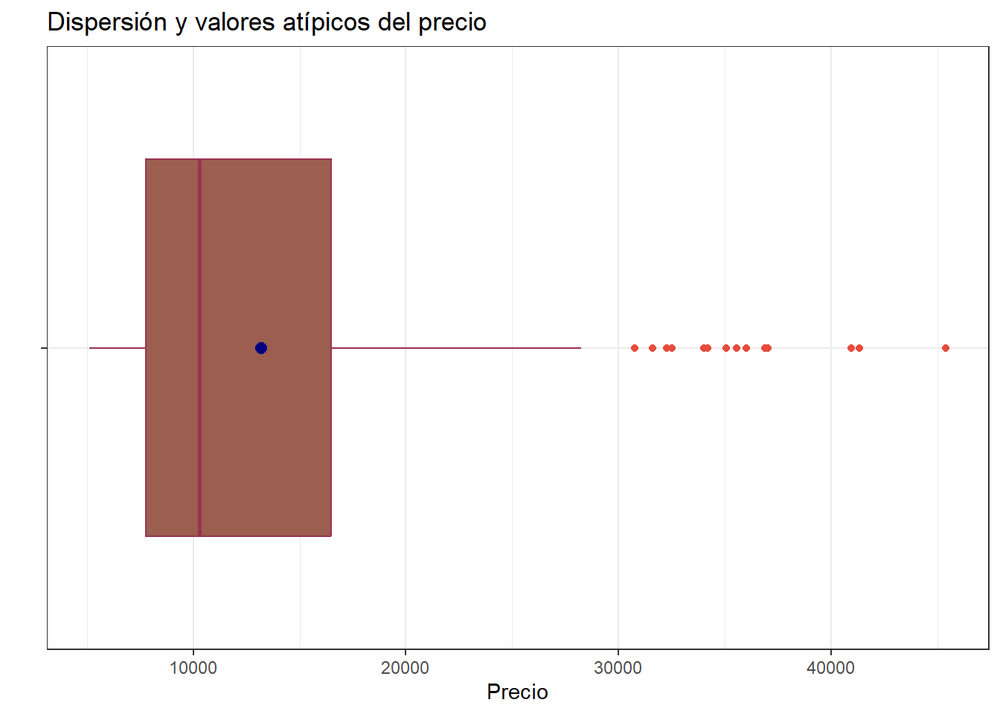
Ahora un histograma
df %>%
ggplot(aes(x = price)) +
geom_histogram(aes(y=after_stat(density)),
binwidth = 2500,
fill = "#9b5e4f",
color = "white",
alpha = 0.7)+
geom_density(color="brown", linewidth = 1.2)+
labs(title= 'Distribución del precio de los automóviles',
x='Precio (USD)',
y ='Densidad')+
theme_bw()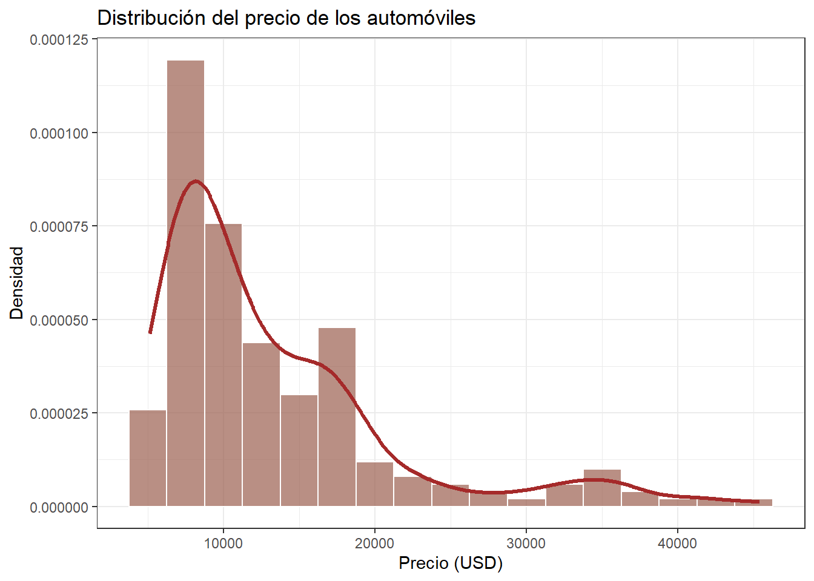
El análisis de price muestra una distribución con sesgo positivo, donde predominan los autos con precios económicos y medios frente a un grupo reducido de vehículos alta gama. A través de la visualización gráfica se identifican valores atípicos superiores que superan los $30000 USD. Esta condición genera una diferencia notable entre la media y la mediana que afectará el comportamiento de los algoritmos predictivoss, haciendo necesario gestionar este detalle durante las siguientes etapas del análisis.
1.5 Análisis de las variables numéricas independientes
Analizaremos inicialmente las variables numéricas
df %>%
select(`engine-size`, horsepower, `city-mpg`, `curb-weight`) %>%
pivot_longer(
cols=everything(),
names_to= 'variable',
values_to= 'valor'
) %>%
group_by(variable) %>%
summarise(n = length(valor),
media= mean(valor, na.rm = TRUE),
sd = sd(valor, na.rm = TRUE),
mediana = median(valor, na.rm = TRUE),
RIC = IQR(valor, na.rm = TRUE),
minimo = min(valor, na.rm = TRUE),
maximo = max(valor, na.rm = TRUE))%>%
kable(caption = "Resumen estadistico de la variables numéricas independientes") %>%
scroll_box(width="100%", height = "300px")| variable | n | media | sd | mediana | RIC | minimo | maximo |
|---|---|---|---|---|---|---|---|
| city-mpg | 201 | 25.1791 | 6.423221 | 24 | 11 | 13 | 49 |
| curb-weight | 201 | 2555.6667 | 517.296727 | 2414 | 757 | 1488 | 4066 |
| engine-size | 201 | 126.8756 | 41.546834 | 120 | 43 | 61 | 326 |
| horsepower | 201 | 103.3970 | 37.365602 | 95 | 46 | 48 | 262 |
p1 <- df %>%
ggplot(aes(y= "", x=`engine-size`))+
geom_boxplot(fill = "#9b5e4f",color = "brown", outlier.color = '#2980b9')+
labs(title = "Tamaño del Motor", y = "", x = "Cilindrada") + theme_bw()
p2 <- df %>%
ggplot(aes(y= "", x=horsepower))+
geom_boxplot(fill = "#9b5e4f",color = "brown", outlier.color = '#2980b9')+
labs(title = "Caballos de Fuerza", y = "", x = "HP") + theme_bw()
p3 <- df %>%
ggplot(aes(y= "", x=`city-mpg`))+
geom_boxplot(fill = "#9b5e4f",color = "brown", outlier.color = '#2980b9')+
labs(title = "Rendimiento en Ciudad", y = "", x = "Millas por Galón") + theme_bw()
p4 <- df %>%
ggplot(aes(y= "", x=`curb-weight`))+
geom_boxplot(fill = "#9b5e4f",color = "brown", outlier.color = '#2980b9')+
labs(title = "Peso del Vehículo", y = "", x = "Libras") + theme_bw()
p1 + p2 + p3 + p4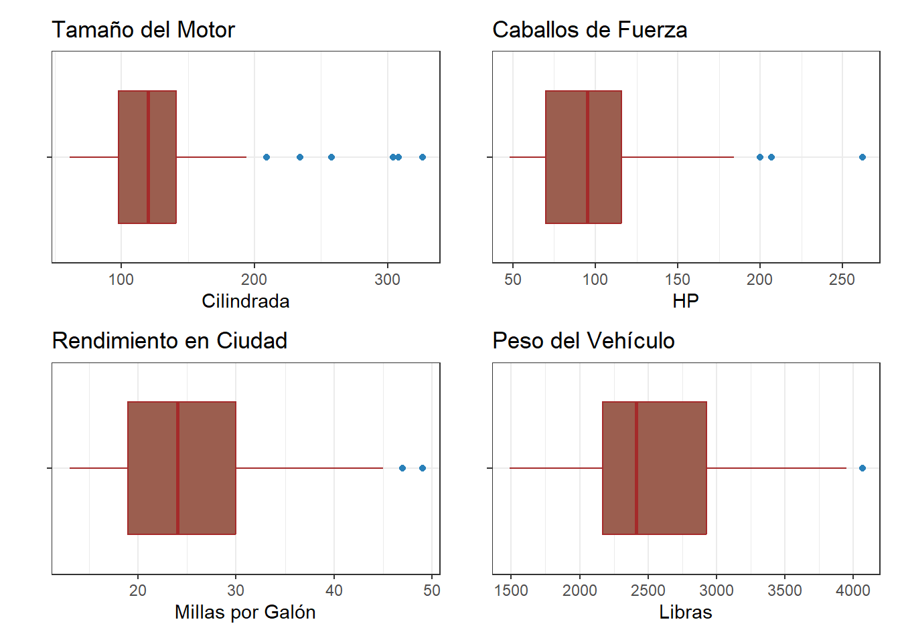
El análisis exploratorio de las principales características mecánicas y de rendimiento de los 205 automóviles muestra los siguientes comportamientos:
Rendimiento en ciudad city-mpg: Los vehículos presentan un promedio de 25.22 MPG (desviación estándar de 6.54) y una mediana de 24 MPG, con un rango intercuartílico (RIC) de 11. Los valores oscilan entre un mínimo de 13 MPG y un máximo de 49 MPG, reflejando una variabilidad moderada en la eficiencia del combustible, donde la mayoría de los autos se concentran en consumos eficientes o moderados.
Peso del vehículo (curb-weight): El peso promedio se sitúa en 2555.57 lbs (SD = 520.68), con una mediana de 2414 lbs y un RIC de 790. La dispersión abarca desde un mínimo de 1488 lbs hasta un máximo de 4066 lbs, lo que evidencia la coexistencia de automóviles ligeros y vehículos de gran carrocería en la muestra.
Tamaño del motor (engine-size): Esta variable registra una media de 126.91 pulgadas cúbicas (SD = 41.64) y una mediana de 120, con un RIC de 44. Los valores van desde un mínimo de 61 hasta un máximo de 326, indicando una asimetría positiva impulsada por una minoría de motores de alta cilindrada.
Caballos de fuerza (horsepower): La potencia media de los motores es de 104.26 HP (SD = 39.52), con una mediana de 95 HP y un RIC de 46. El rango va desde los 48 HP hasta los 288 HP, mostrando una concentración de vehículos con potencias estándar y un grupo selecto de autos deportivos o de alto rendimiento que extienden la cola de la distribución hacia valores superiores.
1.6 Análisis de variable categórica: body-style
tabla_body <- df %>%
count(`body-style`, name = "n") %>%
mutate(Porcentaje = round((n / sum(n))*100,1),
Etiqueta = paste0(n," (",Porcentaje,"%)"))
tabla_body %>%
ggplot(aes(x= reorder(`body-style`, -n), y=n))+
geom_col(fill= "#9b5e4f", width=0.6)+
geom_text(aes(label= Etiqueta), vjust=-0.5, size=4)+
labs(title = "Distribución por Tipo de Carrocería", x = "Estilo de Carrocería", y = "Cantidad") +
scale_y_continuous(expand = expansion(mult=c(0,0.15)))+
theme_bw()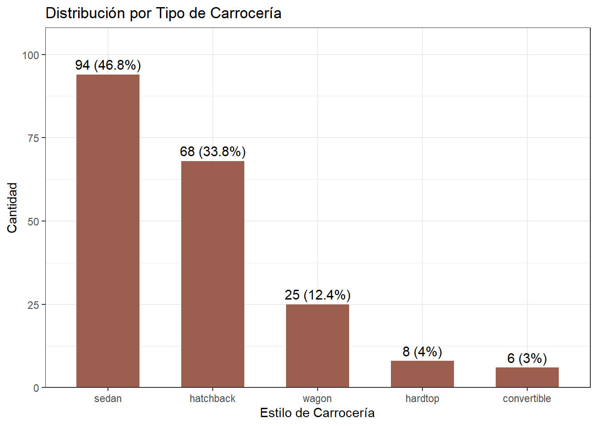
La variable body-style presenta una distribución desigual entre sus categorías. La categoría sedan concentra el 46.8% de los registros, seguida de hatchback con el 34.1%, por lo que en conjunto ambas representan el 80.9% de las observaciones. Las categorías wagon, hardtop y convertible corresponden al 12.2%, 3.9% y 2.9%, respectivamente, evidenciando una baja frecuencia en los diseños minoritarios. Esta distribución evidencia un desbalance entre las categorías, especialmente en el caso de los estilos con menor representación, cuya baja frecuencia puede dificultar la estimación confiable en los modelos estadísticos. En consecuencia, durante el proceso de modelamiento será necesario considerar este desbalance, ya sea mediante técnicas de codificación adecuadas, agrupación de categorías poco representadas o evaluando el impacto de estas en el desempeño de los modelos.
1.7 Análisis Exploratorio Bivariado
df %>%
ggplot(aes(x=`engine-size`, y=price)) +
geom_point(alpha=0.6, color='#2980b9', size=2) +
geom_smooth(method = "lm", color = "#c0392b", se = FALSE) +
labs(title = 'Relación entre el tamaño del motor y el precio',
x='Tamaño del Motor',
y='Precio (USD)') +
theme_bw()## `geom_smooth()` using formula = 'y ~ x'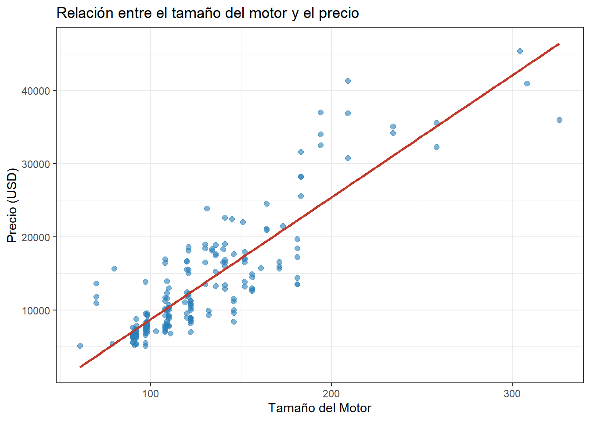
Los puntos presentan una tendencia ascendente claramente definida, indicando que, a medida que aumenta el tamaño del motor de un automóvil, también tiende a incrementarse su precio en USD. La mayor concentración de observaciones se encuentra en tamaños de motor entre 80 y 150 y valores de precio inferiores a $20,000 USD, aunque existe una dispersión considerable para un mismo nivel de cilindrada.
Se observa que la variabilidad del precio de los vehículos aumenta conforme crece el tamaño del motor, lo que sugiere que en los automóviles con motores más grandes y potentes existen rangos de precios más amplios y diversos (típicamente asociados a vehículos de gama alta o deportivos).
En general, la relación entre el tamaño del motor y el precio es positiva y aproximadamente lineal, siendo una de las asociaciones más fuertes del conjunto de datos. Esto sugiere que el tamaño del motor constituye una variable con un alto poder explicativo para predecir el valor de los automóviles y, por tanto, será un predictor fundamental en la construcción de los modelos de regresión.
df %>%
ggplot(aes(x = `body-style`, y = price)) +
geom_boxplot(fill = "#9b5e4f", color = "brown", outlier.color = '#2980b9', alpha = 0.8) +
labs(title = "Distribución del Precio según la Carrocería", x = "Estilo", y = "Precio (USD)") +
theme_bw()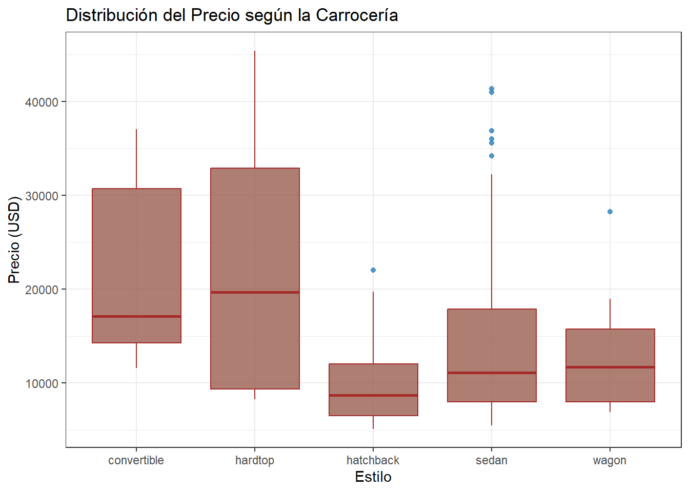
Categorías de mayor valor (Convertible y Hardtop): Los estilos convertible y hardtop registran las medianas de precios más elevadas (situadas aproximadamente entre los $17,000 y $20,000 USD) y cajas más amplias, lo que indica una mayor variabilidad y precios considerablemente más altos en el 50% central de la distribución, reflejando su naturaleza de vehículos orientados a nichos exclusivos o de gama alta.
Segmento económico (Hatchback): En contraste, los modelos hatchback presentan la distribución con los precios más bajos de la muestra, con una mediana cercana a los $9,000 USD y un rango intercuartílico más compacto, lo que denota mayor homogeneidad en este tipo de vehículos utilitarios o económicos.
Segmentos intermedios y valores atípicos (Sedán y Wagon): Los estilos sedán y wagon muestran medianas similares ubicadas alrededor de los $12,000 USD. No obstante, el segmento de los sedanes destaca por la presencia de múltiples valores atípicos (outliers) en el extremo superior que superan los $40,000 USD, lo que evidencia la existencia de berlinas o sedanes de lujo dentro de una categoría que mayoritariamente concentra autos de precios moderados.
Estos resultados demuestran que el estilo de carrocería ejerce una influencia notable sobre la valuación de los automóviles, aportando información discriminatoria clave que será de gran utilidad como variable predictiva en los modelos de regresion.
1.8 Feature Engineering (Nuevas Variables)
Para reducir la correlación y encontrar mejores predictores, crearemos nuevas variables como el promedio de rendimiento de combustible y la relación peso-potencia.
df$avg_mpg <- (df$`city-mpg` + df$`highway-mpg`) / 2
df$weight_power_ratio <- df$`curb-weight` / df$horsepower
cor(df[, c("price", "avg_mpg", "weight_power_ratio")], use = "complete.obs")## price avg_mpg weight_power_ratio
## price 1.0000000 -0.7008108 -0.4237656
## avg_mpg -0.7008108 1.0000000 0.6178053
## weight_power_ratio -0.4237656 0.6178053 1.0000000La matriz de correlación muestra las asociaciones lineales entre el precio de los automóviles (price), el rendimiento promedio de combustible (avg_mpg) y la relación peso-potencia (weight_power_rati). Se observa una correlación negativa moderada-alta entre el precio y el rendimiento de combustible (-0.684), lo que indica que los vehículos más costosos tienden a consumir más combustible (menor eficiencia en MPG), mientras que la relación entre el precio y la relación peso-potencia presenta una asociación negativa más débil (-0.415). Por su parte, avg_mpg y weight_power_ratio muestran una correlación positiva moderada (0.612), evidenciando que estas variables guardan consistencia lógica dentro de las características técnicas de los vehículos de cara a la construcción de los modelos predictivos.
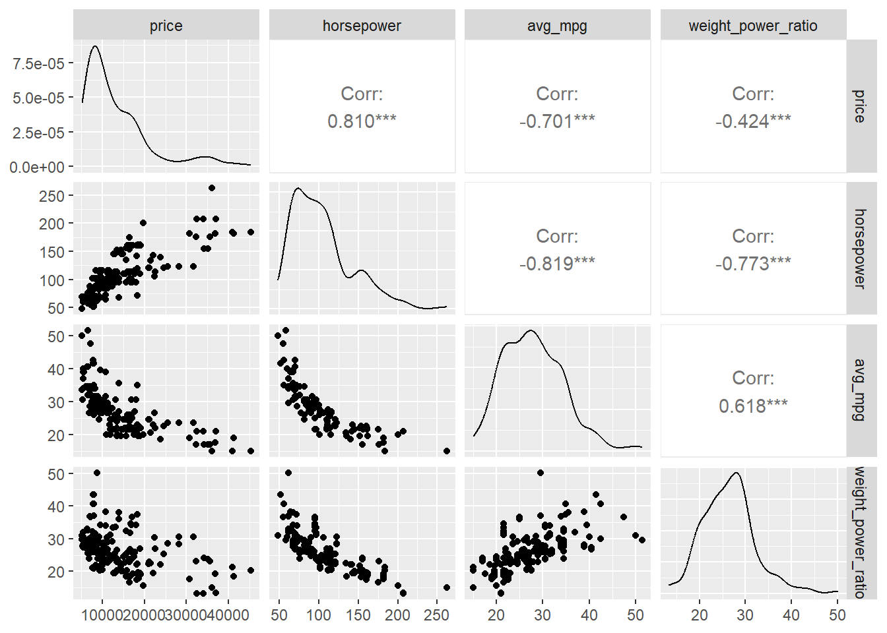
En la relación con la variable objetivo (price), destaca una fuerte correlación positiva con los caballos de fuerza (horsepower con un coeficiente de \(0.758\)), indicando que los vehículos con mayor potencia tienden a registrar precios considerablemente más elevados. Por su parte, el rendimiento de combustible (avg_mpg) presenta una asociación inversa fuerte con el precio (\(-0.684\)) y con la potencia (\(-0.792\)), lo que confirma que los autos más rápidos y costosos son también los menos eficientes en consumo de combustible, aportando variables predictivas altamente significativas para los futuros modelos de regresión.
1.9 Análisis de correlación
Para medir la fuerza de la relación entre price y las variables numéricas usamos tres coeficientes: Pearson (relación lineal; sensible a outliers y a la asimetría), Spearman y Kendall (basados en rangos, más robustos). Como price tiene una asimetría positiva fuerte, es importante comparar los tres.
num_vars <- df %>% dplyr::select(where(is.numeric))
cor_mat <- cor(num_vars, method = "pearson")
cor_long <- as.data.frame(as.table(cor_mat)) %>%
rename(V1 = Var1, V2 = Var2, r = Freq)
ggplot(cor_long, aes(x = V1, y = V2, fill = r)) +
geom_tile(color = "white") +
geom_text(aes(label = round(r, 2)), size = 2.4) +
scale_fill_gradient2(low = "#2980b9", mid = "white", high = "#c0392b",
limits = c(-1, 1), name = "r") +
labs(title = "Matriz de correlación de Pearson (variables numéricas)",
x = "", y = "") +
theme_minimal() +
theme(axis.text.x = element_text(angle = 45, hjust = 1))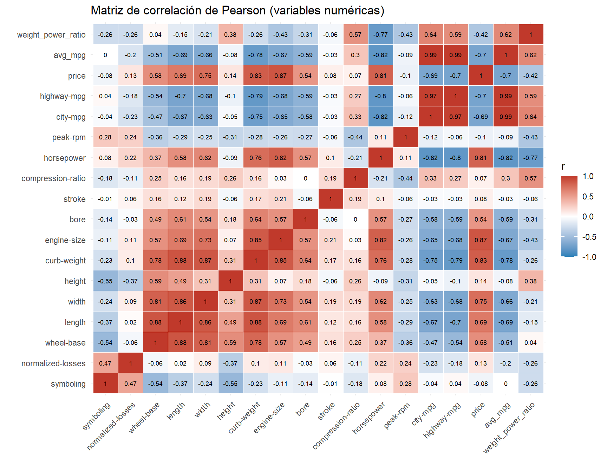
Ahora aplicamos las pruebas de hipótesis \(H_0:\rho=0\) frente a \(H_1:\rho\neq 0\) entre price y las principales variables numéricas:
vars_cor <- c("engine-size", "horsepower", "curb-weight", "wheel-base",
"length", "width", "city-mpg", "highway-mpg")
tabla_cor <- purrr::map_dfr(vars_cor, function(v) {
x <- df[[v]]
y <- df$price
p_ <- cor.test(x, y, method = "pearson")
s_ <- suppressWarnings(cor.test(x, y, method = "spearman", exact = FALSE))
k_ <- suppressWarnings(cor.test(x, y, method = "kendall", exact = FALSE))
tibble(Variable = v,
Pearson = unname(p_$estimate), `p Pearson` = format.pval(p_$p.value, digits = 3, eps = 1e-4),
Spearman = unname(s_$estimate), `p Spearman` = format.pval(s_$p.value, digits = 3, eps = 1e-4),
Kendall = unname(k_$estimate), `p Kendall` = format.pval(k_$p.value, digits = 3, eps = 1e-4))
})
kable(tabla_cor, digits = 3, caption = "Correlación de `price` con las variables numéricas") %>%
scroll_box(width = "100%", height = "320px")| Variable | Pearson | p Pearson | Spearman | p Spearman | Kendall | p Kendall |
|---|---|---|---|---|---|---|
| engine-size | 0.872 | <1e-04 | 0.828 | <1e-04 | 0.661 | <1e-04 |
| horsepower | 0.810 | <1e-04 | 0.849 | <1e-04 | 0.665 | <1e-04 |
| curb-weight | 0.834 | <1e-04 | 0.914 | <1e-04 | 0.744 | <1e-04 |
| wheel-base | 0.585 | <1e-04 | 0.682 | <1e-04 | 0.540 | <1e-04 |
| length | 0.691 | <1e-04 | 0.810 | <1e-04 | 0.636 | <1e-04 |
| width | 0.751 | <1e-04 | 0.812 | <1e-04 | 0.639 | <1e-04 |
| city-mpg | -0.687 | <1e-04 | -0.831 | <1e-04 | -0.661 | <1e-04 |
| highway-mpg | -0.705 | <1e-04 | -0.827 | <1e-04 | -0.652 | <1e-04 |
La variable con mayor asociación lineal con el precio es engine-size (\(Pearson = 0.872\); \(Spearman = 0.828\)). En todas las pruebas se rechaza \(H_0\) cuando el p-valor es menor que 0.05 (ver tabla), es decir, hay evidencia de correlación distinta de cero.
Las variables con relacion positiva son: engine-size, horsepower, curb-weight, length, wheel-base y width.
Las variables con relación negativa son: city-mpg y highway-mpg. Además, todas las variables menos engine-size, presentan una relacion monótona no lineal ya que Spearman es mayor qque Pearson en valor absoluto.
Interpretación de la magnitud (valor absoluto): menor que 0.3 débil, entre 0.3 y 0.7 moderada, mayor que 0.7 fuerte. Recordemos que correlación no implica causalidad: indica asociación, no que una variable cause a la otra.
1.10 Pruebas de hipótesis
dft <- df %>%
mutate(log_price = log(price),
body_style = factor(`body-style`),
fuel_type = factor(`fuel-type`))1.10.1 Dos grupos independientes: precio según tipo de combustible
Queremos saber si el precio de los autos diésel difiere del de los autos a gasolina. Como price es muy asimétrico, aplicamos el test t sobre \(\log(\text{price})\) y, como alternativa no paramétrica, la prueba de Wilcoxon-Mann-Whitney sobre price.
Condiciones del test t: independencia entre grupos, normalidad dentro de cada grupo y homogeneidad de varianzas.
dft %>%
group_by(fuel_type) %>%
summarise(n = n(),
media_log = mean(log_price),
sd_log = sd(log_price),
mediana_price = median(price),
p_shapiro_log = shapiro.test(log_price)$p.value,
p_shapiro_price = shapiro.test(price)$p.value) %>%
kable(digits = 4, caption = "Resumen por tipo de combustible y pruebas de normalidad") %>%
scroll_box(width = "100%", height = "200px")| fuel_type | n | media_log | sd_log | mediana_price | p_shapiro_log | p_shapiro_price |
|---|---|---|---|---|---|---|
| diesel | 20 | 9.5574 | 0.4880 | 13852.5 | 0.1657 | 0.0365 |
| gas | 181 | 9.3272 | 0.4998 | 9989.0 | 0.0000 | 0.0000 |
ggplot(dft, aes(x = fuel_type, y = log_price)) +
geom_boxplot(fill = "#9b5e4f", color = "brown", outlier.color = "#2980b9", alpha = 0.8) +
labs(title = "log(precio) según tipo de combustible", x = "Combustible", y = "log(precio)") +
theme_bw()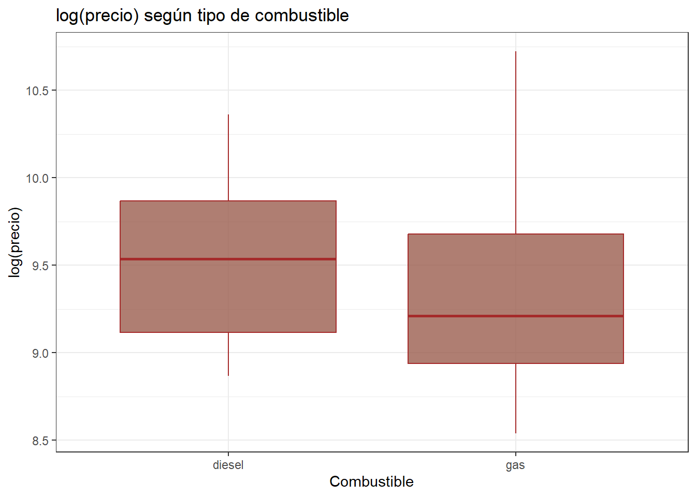
## Levene's Test for Homogeneity of Variance (center = median)
## Df F value Pr(>F)
## group 1 0.009 0.9246
## 199##
## F test to compare two variances
##
## data: log_price by fuel_type
## F = 0.95322, num df = 19, denom df = 180, p-value = 0.9628
## alternative hypothesis: true ratio of variances is not equal to 1
## 95 percent confidence interval:
## 0.5278572 2.0783187
## sample estimates:
## ratio of variances
## 0.9532205Como las varianzas pueden ser distintas y los tamaños de grupo son muy desiguales, usamos la versión de Welch (sin suponer varianzas iguales):
##
## Welch Two Sample t-test
##
## data: log_price by fuel_type
## t = 1.9971, df = 23.627, p-value = 0.05746
## alternative hypothesis: true difference in means between group diesel and group gas is not equal to 0
## 95 percent confidence interval:
## -0.007901153 0.468325711
## sample estimates:
## mean in group diesel mean in group gas
## 9.557420 9.327208# diferencia de medias en log (primer grupo menos segundo) y su efecto porcentual
dif_log <- unname(t_fuel$estimate[1] - t_fuel$estimate[2])
pct <- (exp(dif_log) - 1) * 100
# tamaño del efecto: d de Cohen
cohen_d <- function(x, g) {
g <- factor(g)
x1 <- x[g == levels(g)[1]]
x2 <- x[g == levels(g)[2]]
sp <- sqrt(((length(x1) - 1) * var(x1) + (length(x2) - 1) * var(x2)) /
(length(x1) + length(x2) - 2))
(mean(x1) - mean(x2)) / sp
}
d_fuel <- cohen_d(dft$log_price, dft$fuel_type)
d_fuel## [1] 0.4616006##
## Wilcoxon rank sum test with continuity correction
##
## data: price by fuel_type
## W = 2315, p-value = 0.04098
## alternative hypothesis: true location shift is not equal to 0
## 95 percent confidence interval:
## 160 6236
## sample estimates:
## difference in location
## 2594.367# correlación biserial por rangos como tamaño del efecto
n_g <- table(dft$fuel_type)
rb <- unname(2 * w_fuel$statistic / (n_g[1] * n_g[2]) - 1)
rb## [1] 0.2790055Las hipótesis son \(H_0:\mu_{\text{diésel}}=\mu_{\text{gas}}\) frente a \(H_1:\mu_{\text{diésel}}\neq\mu_{\text{gas}}\) (en la escala logarítmica). El test t de Welch da \(t=1.99\) con \(p = 0.057\), por lo que no rechazamos \(H_0\): no hay evidencia suficiente de diferencia”). En términos prácticos, los autos diésel cuestan aproximadamente 25.9% más que los de gasolina (razón de medias geométricas). El tamaño del efecto es \(d=0.46\)(pequeño).
La prueba de Wilcoxon-Mann-Whitney, que no exige normalidad, da \(p = 0.041\) y una correlación biserial por rangos de \(0.28\), de modo que llega a la misma conclusión.
1.10.2 Dos grupos pareados: rendimiento en carretera vs. en ciudad
Cada automóvil tiene dos mediciones, highway-mpg y city-mpg, por lo que las muestras son dependientes. Trabajamos con la diferencia \(d_i=\text{highway}_i-\text{city}_i\) y probamos \(H_0:\mu_d=0\) frente a \(H_1:\mu_d\neq 0\).
dif_mpg <- df$`highway-mpg` - df$`city-mpg`
ggplot(tibble(dif = dif_mpg), aes(x = dif)) +
geom_histogram(binwidth = 1, fill = "#9b5e4f", color = "white", alpha = 0.8) +
labs(title = "Diferencia highway-mpg − city-mpg", x = "Diferencia (mpg)", y = "Frecuencia") +
theme_bw()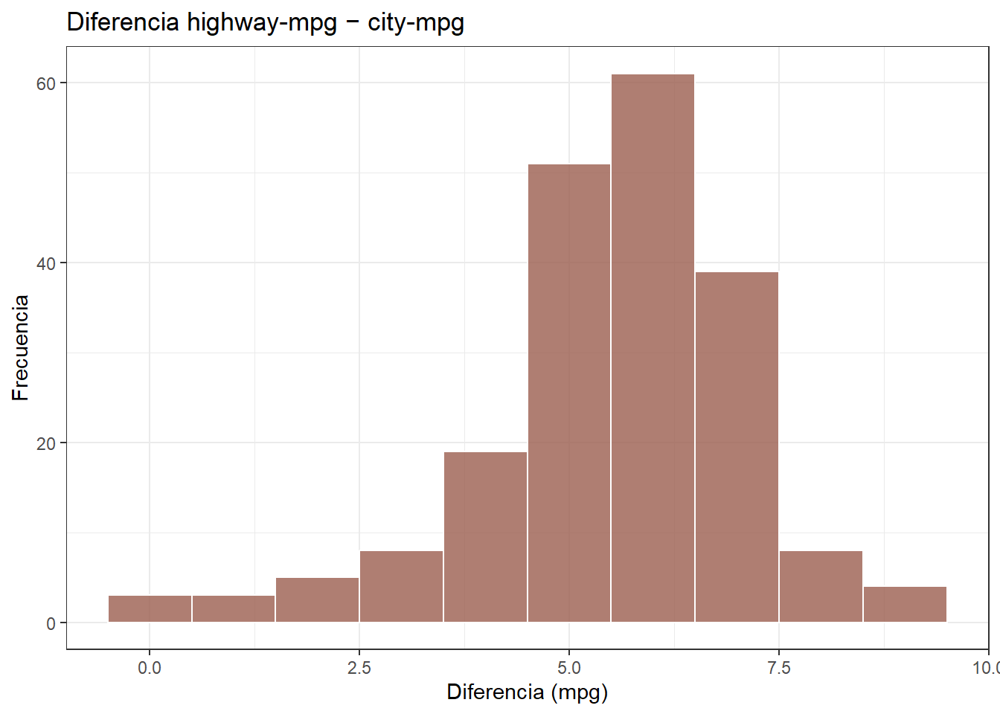
##
## Shapiro-Wilk normality test
##
## data: dif_mpg
## W = 0.91342, p-value = 1.838e-09##
## Paired t-test
##
## data: df$`highway-mpg` and df$`city-mpg`
## t = 48.413, df = 200, p-value < 2.2e-16
## alternative hypothesis: true mean difference is not equal to 0
## 95 percent confidence interval:
## 5.283140 5.731785
## sample estimates:
## mean difference
## 5.507463w_par <- wilcox.test(df$`highway-mpg`, df$`city-mpg`, paired = TRUE,
exact = FALSE, conf.int = TRUE)
w_par##
## Wilcoxon signed rank test with continuity correction
##
## data: df$`highway-mpg` and df$`city-mpg`
## V = 19701, p-value < 2.2e-16
## alternative hypothesis: true location shift is not equal to 0
## 95 percent confidence interval:
## 5.499999 5.999925
## sample estimates:
## (pseudo)median
## 5.500054En promedio, los autos rinden 5.51 mpg más en carretera que en ciudad (\(IC 95%: 5.28\) a \(5.73\)). El test t pareado da \(p = 2.1e-112\), por lo que rechazamos \(H_0\) con un tamaño del efecto \(d_z=3.41\). Como la prueba de Shapiro-Wilk sobre las diferencias tiene \(p = 1.84e-09\), no podemos asumir normalidad y damos más peso a la prueba de Wilcoxon de rangos con signo (\(p = 0\)).
1.10.3 Más de dos grupos: precio según el estilo de carrocería
Comparamos el precio entre los cinco estilos de body-style. Los grupos tienen tamaños muy desiguales (hay pocos convertibles y hardtop) y el precio es asimétrico, así que usamos dos enfoques: ANOVA sobre \(\log(\text{price})\) y Kruskal-Wallis sobre price.
\(H_0:\mu_1=\cdots=\mu_5\) frente a \(H_1:\) al menos una media distinta.
## Df Sum Sq Mean Sq F value Pr(>F)
## body_style 4 7.43 1.8568 8.459 2.57e-06 ***
## Residuals 196 43.02 0.2195
## ---
## Signif. codes: 0 '***' 0.001 '**' 0.01 '*' 0.05 '.' 0.1 ' ' 1# supuestos: normalidad de residuales y homogeneidad de varianzas
sw_aov <- shapiro.test(residuals(modelo_aov))
lev_aov <- leveneTest(log_price ~ body_style, data = dft)
sw_aov##
## Shapiro-Wilk normality test
##
## data: residuals(modelo_aov)
## W = 0.957, p-value = 9.043e-06## Levene's Test for Homogeneity of Variance (center = median)
## Df F value Pr(>F)
## group 4 3.9664 0.004058 **
## 196
## ---
## Signif. codes: 0 '***' 0.001 '**' 0.01 '*' 0.05 '.' 0.1 ' ' 1# tamaño del efecto: eta cuadrado
ss <- res_aov[[1]][["Sum Sq"]]
eta2 <- ss[1] / sum(ss)
F_aov <- res_aov[[1]][["F value"]][1]
p_aov <- res_aov[[1]][["Pr(>F)"]][1]El ANOVA da \(F=8.46\) con \(p = 2.57e-06\), por lo que rechazamos \(H_0\): el precio medio (en log) no es igual en todos los estilos. El estilo de carrocería explica el 14.7% de la variabilidad de \(\log(\text{price})\) (\(\eta^2=0.147\)). Respecto a los supuestos, Shapiro-Wilk sobre los residuales da \(p = 9.04e-06\) y Levene \(p = 0.00406\).
Comparaciones múltiples (Tukey). Como se rechazó \(H_0\), identificamos qué pares de estilos difieren:
tuk <- as.data.frame(TukeyHSD(modelo_aov)$body_style)
kable(tuk, digits = 4, caption = "Comparaciones múltiples de Tukey (log del precio)") %>%
scroll_box(width = "100%", height = "300px")| diff | lwr | upr | p adj | |
|---|---|---|---|---|
| hardtop-convertible | -0.0966 | -0.7933 | 0.6000 | 0.9955 |
| hatchback-convertible | -0.7628 | -1.3122 | -0.2134 | 0.0016 |
| sedan-convertible | -0.4519 | -0.9951 | 0.0913 | 0.1522 |
| wagon-convertible | -0.5399 | -1.1263 | 0.0465 | 0.0872 |
| hatchback-hardtop | -0.6662 | -1.1483 | -0.1840 | 0.0018 |
| sedan-hardtop | -0.3553 | -0.8304 | 0.1198 | 0.2423 |
| wagon-hardtop | -0.4433 | -0.9673 | 0.0807 | 0.1401 |
| sedan-hatchback | 0.3109 | 0.1055 | 0.5163 | 0.0004 |
| wagon-hatchback | 0.2229 | -0.0788 | 0.5246 | 0.2536 |
| wagon-sedan | -0.0880 | -0.3783 | 0.2023 | 0.9196 |
Los pares con diferencia significativa al 5% son: hatchback-convertible, hatchback-hardtop, sedan-hatchback.
Alternativa no paramétrica (Kruskal-Wallis). No exige normalidad y trabaja con rangos:
##
## Kruskal-Wallis rank sum test
##
## data: price by body_style
## Kruskal-Wallis chi-squared = 25.023, df = 4, p-value = 4.977e-05eps2 <- unname(kw$statistic) / (nrow(dft) - 1) # épsilon cuadrado
# post-hoc por pares con corrección de Holm
pairwise.wilcox.test(dft$price, dft$body_style,
p.adjust.method = "holm", exact = FALSE)##
## Pairwise comparisons using Wilcoxon rank sum test with continuity correction
##
## data: dft$price and dft$body_style
##
## convertible hardtop hatchback sedan
## hardtop 0.9554 - - -
## hatchback 0.0148 0.0956 - -
## sedan 0.2633 0.5434 0.0012 -
## wagon 0.1777 0.5434 0.1080 0.9554
##
## P value adjustment method: holmKruskal-Wallis da \(H=25.02\) (\(p = 4.98e-05\)) y \(\epsilon^2=0.125\), así que también se rechaza que el precio sea igual en todos los estilos. En el post-hoc se usó la corrección de Holm para controlar el error por comparaciones múltiples.
1.11 Tabla de contingencia
Queremos saber si el tipo de tracción (drive-wheels) y el estilo de carrocería están asociados. Una sola muestra de autos se clasifica con dos criterios, así que corresponde la prueba de independencia con \(H_0\): las variables son independientes. Para evitar celdas casi vacías, agrupamos los estilos poco frecuentes en la categoría otras.
dfc <- df %>%
mutate(traccion = factor(`drive-wheels`),
carroceria = case_when(`body-style` == "sedan" ~ "sedan",
`body-style` == "hatchback" ~ "hatchback",
TRUE ~ "otras"))
tab <- table(Traccion = dfc$traccion, Carroceria = dfc$carroceria)
tab## Carroceria
## Traccion hatchback otras sedan
## 4wd 1 4 3
## fwd 49 14 55
## rwd 18 21 36## Carroceria
## Traccion hatchback otras sedan
## 4wd 12.5 50.0 37.5
## fwd 41.5 11.9 46.6
## rwd 24.0 28.0 48.0ggplot(dfc, aes(x = traccion, fill = carroceria)) +
geom_bar(position = "fill") +
scale_y_continuous(labels = scales::percent) +
labs(title = "Estilo de carrocería según tipo de tracción",
x = "Tracción", y = "Porcentaje", fill = "Carrocería") +
theme_bw()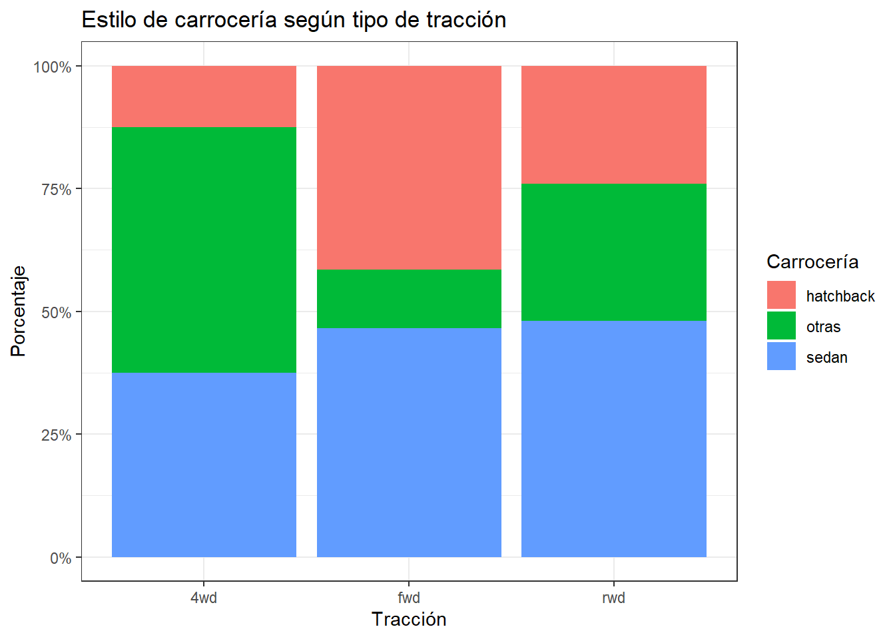
## Warning in chisq.test(tab): Chi-squared approximation may be incorrect## Carroceria
## Traccion hatchback otras sedan
## 4wd 2.706468 1.552239 3.741294
## fwd 39.920398 22.895522 55.184080
## rwd 25.373134 14.552239 35.074627usa_sim <- any(chi$expected < 5)
if (usa_sim) chi <- chisq.test(tab, simulate.p.value = TRUE, B = 10000)
chi##
## Pearson's Chi-squared test with simulated p-value (based on 10000
## replicates)
##
## data: tab
## X-squared = 15.628, df = NA, p-value = 0.0036## [1] 0.1971717## Carroceria
## Traccion hatchback otras sedan
## 4wd -1.30 2.23 -0.54
## fwd 2.75 -3.22 -0.05
## rwd -2.27 2.38 0.27Como alguna frecuencia esperada es menor que 5 (por ejemplo, en la tracción 4wd), la aproximación chi-cuadrado no es confiable; por eso calculamos el p-valor por simulación de Monte Carlo. El estadístico es \(\chi^2=15.63\) con \(p = 0.0036\), de modo que rechazamos \(H_0\): existe asociación entre la tracción y el estilo de carrocería. La V de Cramér es 0.197 (asociación débil).
1.12 Modelo de regresión lineal simple
1.12.1 Elección de la transformación
Evaluamos tres especificaciones: price sin transformar, \(\log(\text{price})\) y \(\log(\text{price})\) frente a \(\log(\text{engine-size})\).
rls <- df %>%
transmute(price,
log_price = log(price),
engine_size = `engine-size`,
log_engine = log(`engine-size`))
mod_raw <- lm(price ~ engine_size, data = rls)
mod_log <- lm(log_price ~ engine_size, data = rls)
mod_loglog <- lm(log_price ~ log_engine, data = rls)
diag_mod <- function(m, nombre) {
tibble(Modelo = nombre,
`R2 ajustado` = summary(m)$adj.r.squared,
`p Shapiro-Wilk` = shapiro.test(residuals(m))$p.value,
`p Breusch-Pagan` = lmtest::bptest(m)$p.value)
}
bind_rows(diag_mod(mod_raw, "price ~ engine-size"),
diag_mod(mod_log, "log(price) ~ engine-size"),
diag_mod(mod_loglog, "log(price) ~ log(engine-size)")) %>%
kable(digits = 4, caption = "Comparación de especificaciones (el R2 no es comparable entre escalas distintas de la respuesta)")| Modelo | R2 ajustado | p Shapiro-Wilk | p Breusch-Pagan |
|---|---|---|---|
| price ~ engine-size | 0.7598 | 0e+00 | 0.0000 |
| log(price) ~ engine-size | 0.6873 | 2e-04 | 0.0040 |
| log(price) ~ log(engine-size) | 0.7110 | 0e+00 | 0.0898 |
## df AIC
## mod_log 3 63.91097
## mod_loglog 3 48.06386res_plot <- function(m, titulo) {
tibble(aj = fitted(m), res = resid(m)) %>%
ggplot(aes(x = aj, y = res)) +
geom_point(alpha = 0.6, color = "#2980b9") +
geom_hline(yintercept = 0, color = "#c0392b", linetype = 2) +
labs(title = titulo, x = "Valores ajustados", y = "Residuales") +
theme_bw()
}
res_plot(mod_raw, "price ~ engine-size") +
res_plot(mod_log, "log(price) ~ engine-size") +
res_plot(mod_loglog, "log(price) ~ log(engine-size)")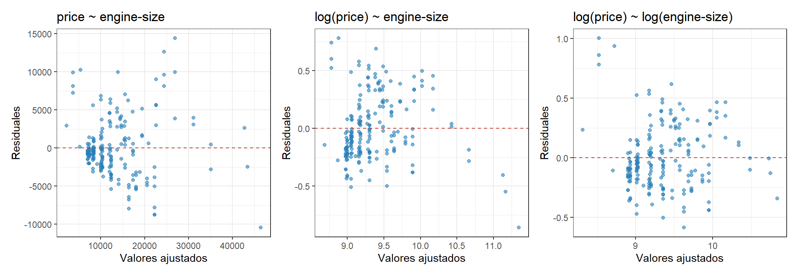
Con price sin transformar, los residuales se abren en forma de embudo (varianza creciente), lo que viola la homocedasticidad; las versiones con logaritmo corrigen total o parcialmente ese patrón. Para mantener la coherencia con el modelo múltiple, continuamos con \(\log(\text{price})\) frente a log_engine.
##
## Call:
## lm(formula = log_price ~ log_engine, data = rls)
##
## Residuals:
## Min 1Q Median 3Q Max
## -0.5841 -0.1790 -0.0491 0.1488 1.0010
##
## Coefficients:
## Estimate Std. Error t value Pr(>|t|)
## (Intercept) 2.12941 0.32576 6.537 5.17e-10 ***
## log_engine 1.50424 0.06775 22.204 < 2e-16 ***
## ---
## Signif. codes: 0 '***' 0.001 '**' 0.01 '*' 0.05 '.' 0.1 ' ' 1
##
## Residual standard error: 0.27 on 199 degrees of freedom
## Multiple R-squared: 0.7124, Adjusted R-squared: 0.711
## F-statistic: 493 on 1 and 199 DF, p-value: < 2.2e-161.12.2 Estimación e inferencia sobre los coeficientes
## 2.5 % 97.5 %
## (Intercept) 1.487034 2.771784
## log_engine 1.370644 1.637828b1 <- coef(mod_rls)["log_engine"]
c(por_1pct = (1.01^b1 - 1) * 100,
por_10pct = (1.10^b1 - 1) * 100)## por_1pct.log_engine por_10pct.log_engine
## 1.508022 15.415562El coeficiente \(\hat\beta_1=1.504\) es una elasticidad: si el tamaño del motor aumenta 1%, el precio cambia en promedio aproximadamente 1.5% (exactamente 1.51%), y si el motor aumenta 10%, el precio cambia en promedio 15.4%. El intervalo de confianza del 95% para \(\beta_1\) es (1.371, 1.638), que no contiene el cero, de modo que la prueba \(H_0:\beta_1=0\) se rechaza. El coeficiente de determinación es \(R^2=0.712\).
1.12.3 Tabla ANOVA y significancia global
## Analysis of Variance Table
##
## Response: log_price
## Df Sum Sq Mean Sq F value Pr(>F)
## log_engine 1 35.943 35.943 493.02 < 2.2e-16 ***
## Residuals 199 14.508 0.073
## ---
## Signif. codes: 0 '***' 0.001 '**' 0.01 '*' 0.05 '.' 0.1 ' ' 1F_rls <- summary(mod_rls)$fstatistic[1]
t_rls <- summary(mod_rls)$coefficients["log_engine", "t value"]
c(F = unname(F_rls), t_al_cuadrado = unname(t_rls^2))## F t_al_cuadrado
## 493.0185 493.0185En la regresión simple la prueba F global equivale a la prueba t de la pendiente (\(F=t^2\)), como se verifica arriba.
1.12.4 Análisis de residuales
res_rls <- residuals(mod_rls)
set.seed(123)
dw_rls <- durbinWatsonTest(mod_rls)
sw_rls <- shapiro.test(res_rls)
tt_rls <- t.test(res_rls, mu = 0)
bp_rls <- bptest(mod_rls)
dw_rls## lag Autocorrelation D-W Statistic p-value
## 1 0.5779452 0.8297086 0
## Alternative hypothesis: rho != 0##
## Shapiro-Wilk normality test
##
## data: res_rls
## W = 0.9573, p-value = 9.707e-06##
## One Sample t-test
##
## data: res_rls
## t = 4.7054e-16, df = 200, p-value = 1
## alternative hypothesis: true mean is not equal to 0
## 95 percent confidence interval:
## -0.03746062 0.03746062
## sample estimates:
## mean of x
## 8.939004e-18##
## studentized Breusch-Pagan test
##
## data: mod_rls
## BP = 2.8787, df = 1, p-value = 0.08976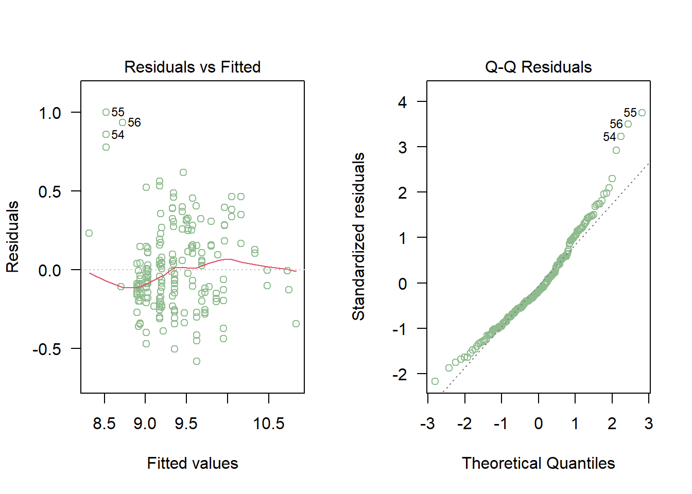
- Independencia: \(Durbin-Watson = 0.83\) (\(p = 0\)). Recordemos que las filas de la base no tienen un orden temporal real.
- Normalidad: Shapiro-Wilk \(p = 9.71e-06\).
- Media cero: prueba t \(p = 1\).
- Varianza constante: Breusch-Pagan \(p = 0.0898\).
Concluimos que se cumplen los supuestos de Media cero y varianza constante. En cambio, no se cumple la normalidad de los residuos, ni la independencia bajo el orden actual de las filas.
1.12.5 Estimación de la respuesta media y predicción
Para un motor de tamaño igual a la mediana de la muestra (120 pulgadas cúbicas) calculamos un intervalo de confianza para el precio típico y un intervalo de predicción para un auto nuevo, devueltos a dólares con la función exponencial.
x0 <- data.frame(log_engine = log(median(rls$engine_size)))
ic0 <- exp(predict(mod_rls, newdata = x0, interval = "confidence"))
ip0 <- exp(predict(mod_rls, newdata = x0, interval = "prediction"))
ic0## fit lwr upr
## 1 11281.58 10865.33 11713.78## fit lwr upr
## 1 11281.58 6615.405 19239.05Para un motor de 120 pulgadas cúbicas, el precio típico estimado es de aproximadamente $11282 USD; con 95% de confianza, el precio típico está entre $10865 y $11714 USD, y el precio de un auto nuevo estaría entre $6615 y $19239 USD. El intervalo de predicción es más amplio porque incluye la variabilidad individual del error.
grid <- tibble(engine_size = seq(min(rls$engine_size), max(rls$engine_size), length.out = 100)) %>%
mutate(log_engine = log(engine_size))
ic <- exp(predict(mod_rls, newdata = grid, interval = "confidence"))
ip <- exp(predict(mod_rls, newdata = grid, interval = "prediction"))
grid <- grid %>%
mutate(fit = ic[, "fit"], ic_lwr = ic[, "lwr"], ic_upr = ic[, "upr"],
ip_lwr = ip[, "lwr"], ip_upr = ip[, "upr"])
ggplot() +
geom_ribbon(data = grid, aes(x = engine_size, ymin = ip_lwr, ymax = ip_upr),
fill = "#9b5e4f", alpha = 0.15) +
geom_ribbon(data = grid, aes(x = engine_size, ymin = ic_lwr, ymax = ic_upr),
fill = "#9b5e4f", alpha = 0.35) +
geom_point(data = rls, aes(x = engine_size, y = price), alpha = 0.6, color = "#2980b9") +
geom_line(data = grid, aes(x = engine_size, y = fit), color = "#c0392b", linewidth = 1) +
labs(title = "Modelo simple: precio vs. tamaño del motor",
subtitle = "Banda oscura: IC 95% de la respuesta media; banda clara: intervalo de predicción 95%",
x = "Tamaño del motor", y = "Precio (USD)") +
theme_bw()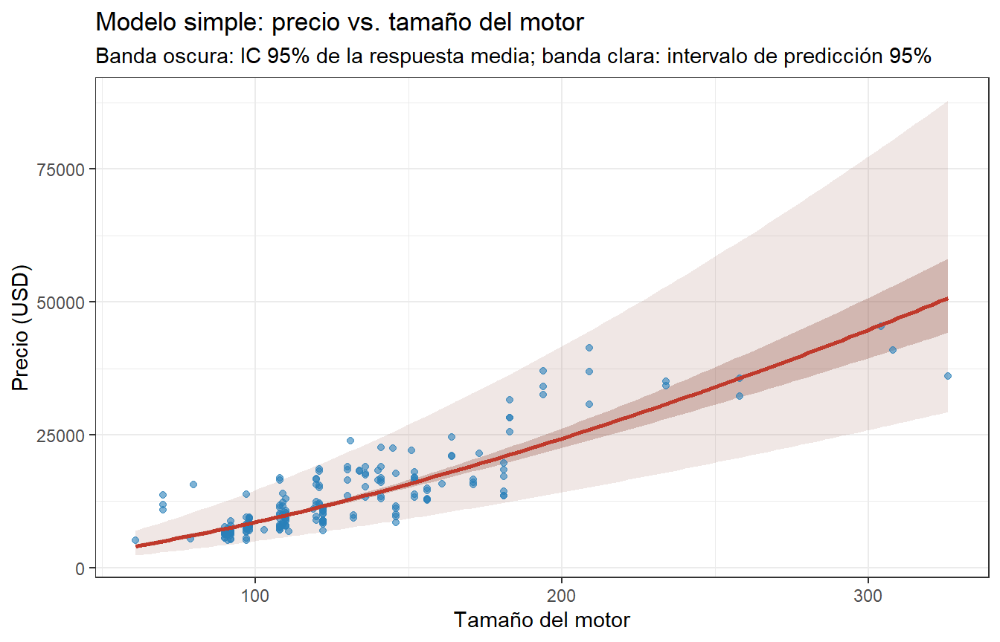
1.13 Modelo de regresión lineal múltiple
1.13.1 ¿Por qué usamos una regresión lineal múltiple?
Nuestra variable respuesta es el precio (price), que es continua, y queremos explicarla con varias características del automóvil (más de una variable explicativa, \(k>1\)), tanto numéricas como categóricas. Por eso usamos el modelo de regresión lineal múltiple (RLM).
Con este modelo buscamos (1) medir cuánto influye cada variable sobre el precio manteniendo las demás constantes, (2) construir una función de predicción y (3) calcular intervalos de confianza y de predicción.
Transformación de la respuesta. En el análisis exploratorio vimos que price tiene una asimetría positiva fuerte (1.8) y que su variabilidad aumenta con el tamaño del motor. Como la RLM supone errores normales con varianza constante, y siguiendo la sección 7.7 del libro (transformaciones para mejorar el ajuste), modelamos \(\log(\text{price})\), cuya asimetría baja a 0.67. Con esta transformación cada coeficiente se interpreta como un cambio porcentual en el precio: si \(x_j\) aumenta una unidad, el precio cambia en promedio \((e^{\beta_j}-1)\times 100\%\).
1.13.2 Preparación de las variables
Como candidatas usamos las variables numéricas del análisis exploratorio (engine-size, horsepower, curb-weight) y las dos variables creadas en Feature Engineering (avg_mpg y weight_power_ratio). Las variables categóricas body-style y fuel-type se convierten en variables dummy (sección 8.12): sedan es la categoría de referencia de body-style y gas la de fuel-type, por lo que las dummy valen 0 en esas categorías.
datos <- df %>%
transmute(
log_price = log(price),
engine_size = `engine-size`,
horsepower = horsepower,
curb_weight = `curb-weight`,
avg_mpg = avg_mpg,
weight_power_ratio = weight_power_ratio,
bs_convertible = as.numeric(`body-style` == "convertible"),
bs_hardtop = as.numeric(`body-style` == "hardtop"),
bs_hatchback = as.numeric(`body-style` == "hatchback"),
bs_wagon = as.numeric(`body-style` == "wagon"),
diesel = as.numeric(`fuel-type` == "diesel")
)
# modelo de RLM con todas las variables candidatas
mod_completo <- lm(log_price ~ ., data = datos)
summary(mod_completo)##
## Call:
## lm(formula = log_price ~ ., data = datos)
##
## Residuals:
## Min 1Q Median 3Q Max
## -0.45567 -0.09611 -0.01953 0.10243 0.42665
##
## Coefficients:
## Estimate Std. Error t value Pr(>|t|)
## (Intercept) 8.044e+00 2.889e-01 27.839 < 2e-16 ***
## engine_size 6.864e-05 7.685e-04 0.089 0.92892
## horsepower 4.515e-03 1.377e-03 3.279 0.00124 **
## curb_weight 4.606e-04 9.526e-05 4.835 2.74e-06 ***
## avg_mpg -1.017e-02 4.964e-03 -2.048 0.04193 *
## weight_power_ratio -1.508e-03 6.750e-03 -0.223 0.82341
## bs_convertible 2.214e-01 7.525e-02 2.943 0.00366 **
## bs_hardtop 5.788e-02 6.902e-02 0.839 0.40274
## bs_hatchback -9.955e-02 2.988e-02 -3.331 0.00104 **
## bs_wagon -1.366e-01 4.335e-02 -3.151 0.00189 **
## diesel 1.950e-01 6.334e-02 3.079 0.00239 **
## ---
## Signif. codes: 0 '***' 0.001 '**' 0.01 '*' 0.05 '.' 0.1 ' ' 1
##
## Residual standard error: 0.176 on 190 degrees of freedom
## Multiple R-squared: 0.8834, Adjusted R-squared: 0.8772
## F-statistic: 143.9 on 10 and 190 DF, p-value: < 2.2e-161.13.3 Multicolinealidad
Antes de elegir las variables revisamos la multicolinealidad (sección 8.11). En el análisis exploratorio ya habíamos visto que horsepower y avg_mpg están muy correlacionadas (-0.79), así que es probable que haya variables redundantes. Usamos el factor de inflación de la varianza (VIF) y la regla del libro: la variable \(x_j\) es responsable de la multicolinealidad si \(VIF_j > 5\).
## engine_size horsepower curb_weight avg_mpg
## 6.58 17.09 15.68 6.87
## weight_power_ratio bs_convertible bs_hardtop bs_hatchback
## 9.56 1.06 1.18 1.30
## bs_wagon diesel
## 1.33 2.33Varias variables superan el 5. La más alta es curb_weight (\(VIF = 15.7\)), así que la retiramos y volvemos a calcular.
datos_2 <- datos %>% dplyr::select(-curb_weight)
mod_2 <- lm(log_price ~ ., data = datos_2)
v2 <- vif(mod_2)
round(v2, 2)## engine_size horsepower avg_mpg weight_power_ratio
## 4.84 13.50 3.45 6.56
## bs_convertible bs_hardtop bs_hatchback bs_wagon
## 1.06 1.13 1.29 1.29
## diesel
## 2.00Ahora horsepower sigue siendo problemática (\(VIF = 13.5\)), por lo que también la retiramos.
datos_3 <- datos_2 %>% dplyr::select(-horsepower)
mod_3 <- lm(log_price ~ ., data = datos_3)
v3 <- vif(mod_3)
round(v3, 2)## engine_size avg_mpg weight_power_ratio bs_convertible
## 2.28 2.72 2.82 1.06
## bs_hardtop bs_hatchback bs_wagon diesel
## 1.13 1.28 1.26 1.74Con curb_weight y horsepower fuera, ningún VIF supera 5 (el máximo es 2.82). La información de ambas variables queda recogida en buena parte por engine_size, avg_mpg y weight_power_ratio (estas dos últimas las construimos justamente para reducir la correlación).
1.13.4 Selección de variables
Con las 8 variables que quedan usamos el método de todas las regresiones posibles, que ajusta los \(2^8-1=255\) modelos posibles y los compara con criterios estadísticos. Elegimos el modelo con menor AIC, que equilibra el ajuste con la complejidad, y lo comparamos con el de mayor \(R^2\) ajustado.
## Warning: package 'olsrr' was built under R version 4.6.2##
## Adjuntando el paquete: 'olsrr'## The following object is masked from 'package:datasets':
##
## riverstodas <- ols_step_all_possible(mod_3)
resultados <- todas$result
# mejor modelo según el AIC
mejor_aic <- resultados[which.min(resultados$aic), ]
mejor_aic[, c("n", "predictors", "adjr", "aic")]## n predictors
## 223 6 engine_size avg_mpg weight_power_ratio bs_convertible bs_hatchback diesel
## adjr aic
## 223 0.8394855 -65.25417# mejor modelo según el R^2 ajustado
mejor_adjr <- resultados[which.max(resultados$adjr), ]
mejor_adjr[, c("n", "predictors", "adjr", "aic")]## n
## 250 7
## predictors
## 250 engine_size avg_mpg weight_power_ratio bs_convertible bs_hatchback bs_wagon diesel
## adjr aic
## 250 0.8398348 -64.73077ggplot(resultados, aes(x = adjr, y = aic)) +
geom_point() +
theme_minimal() +
xlab(expression(R^2 * " ajustado")) +
ylab("AIC")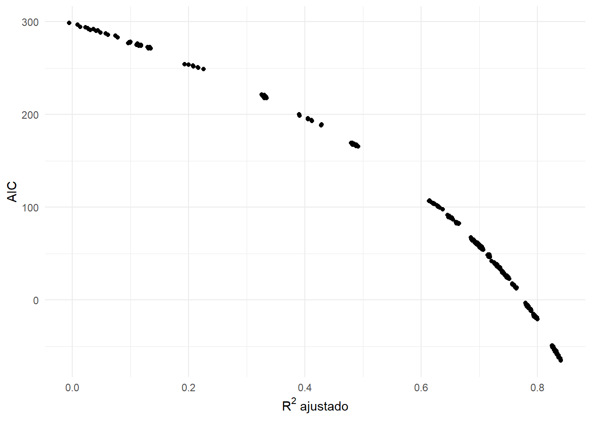
El AIC selecciona el modelo con 6 variables: engine_size avg_mpg weight_power_ratio bs_convertible bs_hatchback diesel. El modelo con mayor \(R^2\) ajustado (0.8398) solo agrega una variable más y mejora el \(R^2\) ajustado en menos de 0.001 frente al de AIC (0.8395). Por parsimonia nos quedamos con el modelo del AIC.
1.13.5 Modelo final
modelo_final <- lm(log_price ~ engine_size + avg_mpg + weight_power_ratio +
bs_convertible + bs_hatchback + diesel, data = datos)
summary(modelo_final)##
## Call:
## lm(formula = log_price ~ engine_size + avg_mpg + weight_power_ratio +
## bs_convertible + bs_hatchback + diesel, data = datos)
##
## Residuals:
## Min 1Q Median 3Q Max
## -0.46529 -0.12998 -0.01053 0.10910 0.59965
##
## Coefficients:
## Estimate Std. Error t value Pr(>|t|)
## (Intercept) 9.9928097 0.1616567 61.815 < 2e-16 ***
## engine_size 0.0049668 0.0005076 9.785 < 2e-16 ***
## avg_mpg -0.0361668 0.0034104 -10.605 < 2e-16 ***
## weight_power_ratio -0.0107036 0.0039257 -2.727 0.00699 **
## bs_convertible 0.1968529 0.0850146 2.316 0.02163 *
## bs_hatchback -0.0943740 0.0327304 -2.883 0.00438 **
## diesel 0.4516299 0.0618208 7.305 7e-12 ***
## ---
## Signif. codes: 0 '***' 0.001 '**' 0.01 '*' 0.05 '.' 0.1 ' ' 1
##
## Residual standard error: 0.2012 on 194 degrees of freedom
## Multiple R-squared: 0.8443, Adjusted R-squared: 0.8395
## F-statistic: 175.3 on 6 and 194 DF, p-value: < 2.2e-161.13.5.1 Comparación con la selección secuencial
Como complemento al método de todas las regresiones posibles, aplicamos la selección secuencial con el AIC como criterio: forward (parte del modelo sin variables y agrega), backward (parte del modelo completo y elimina) y both (en ambas direcciones).
mod_nulo <- lm(log_price ~ 1, data = datos_3)
step_fwd <- step(mod_nulo, scope = formula(mod_3), direction = "forward", trace = 0)
step_bwd <- step(mod_3, direction = "backward", trace = 0)
step_both <- step(mod_nulo, scope = list(lower = ~ 1, upper = formula(mod_3)),
direction = "both", trace = 0)
vars_de <- function(m) paste(attr(terms(m), "term.labels"), collapse = " + ")
tibble(Método = c("Todas las regresiones (menor AIC)", "Forward", "Backward", "Both"),
Variables = c(vars_de(modelo_final), vars_de(step_fwd), vars_de(step_bwd), vars_de(step_both)),
AIC = c(AIC(modelo_final), AIC(step_fwd), AIC(step_bwd), AIC(step_both)),
`R2 ajustado` = c(summary(modelo_final)$adj.r.squared, summary(step_fwd)$adj.r.squared,
summary(step_bwd)$adj.r.squared, summary(step_both)$adj.r.squared)) %>%
kable(digits = 4, caption = "Comparación de métodos de selección de variables") %>%
scroll_box(width = "100%", height = "250px")| Método | Variables | AIC | R2 ajustado |
|---|---|---|---|
| Todas las regresiones (menor AIC) | engine_size + avg_mpg + weight_power_ratio + bs_convertible + bs_hatchback + diesel | -65.2542 | 0.8395 |
| Forward | engine_size + avg_mpg + diesel + bs_convertible + bs_hatchback + weight_power_ratio | -65.2542 | 0.8395 |
| Backward | engine_size + avg_mpg + weight_power_ratio + bs_convertible + bs_hatchback + diesel | -65.2542 | 0.8395 |
| Both | engine_size + avg_mpg + diesel + bs_convertible + bs_hatchback + weight_power_ratio | -65.2542 | 0.8395 |
Observamos que los cuatro modelos coinciden, por lo tanto se refuerza la selección del modelo final.
Para verificar la teoría, calculamos los estimadores de forma matricial y los comparamos con los de lm:
X <- model.matrix(modelo_final)
y <- datos$log_price
beta_hat <- solve(t(X) %*% X) %*% t(X) %*% y
cbind(matricial = as.vector(beta_hat), lm = coef(modelo_final))## matricial lm
## (Intercept) 9.992809710 9.992809710
## engine_size 0.004966844 0.004966844
## avg_mpg -0.036166793 -0.036166793
## weight_power_ratio -0.010703560 -0.010703560
## bs_convertible 0.196852937 0.196852937
## bs_hatchback -0.094373996 -0.094373996
## diesel 0.451629873 0.451629873Los coeficientes coinciden. El modelo estimado es:
\[\widehat{\log(\text{price})} = 9.993 + 0.005 \\,\text{engine_size} -0.0362 \\,\text{avg_mpg} -0.0107 \\,\text{weight_power_ratio} + \cdots\]
Prueba de significancia global. Probamos \(H_0:\beta_1=\cdots=\beta_k=0\) frente a \(H_1:\beta_j\neq 0\) para al menos un \(j\), con la tabla ANOVA:
n <- nrow(X)
p <- ncol(X)
k <- p - 1
SSE <- sum((y - X %*% beta_hat)^2)
SST <- sum((y - mean(y))^2)
SSR <- SST - SSE
F0 <- (SSR / k) / (SSE / (n - k - 1))
p_F <- pf(F0, k, n - k - 1, lower.tail = FALSE)
tab_anova <- data.frame(
`Fuente de variación` = c("Regresión", "Residuales", "Total"),
`Suma de cuadrados` = c(SSR, SSE, SST),
`Gl` = c(k, n - k - 1, n - 1),
`Cuadrado medio` = c(SSR / k, SSE / (n - k - 1), NA),
`F0` = c(F0, NA, NA),
`p-valor` = c(p_F, NA, NA),
check.names = FALSE
)
kable(tab_anova, digits = 4, caption = "Tabla ANOVA del modelo final")| Fuente de variación | Suma de cuadrados | Gl | Cuadrado medio | F0 | p-valor |
|---|---|---|---|---|---|
| Regresión | 42.5961 | 6 | 7.0993 | 175.3323 | 0 |
| Residuales | 7.8552 | 194 | 0.0405 | NA | NA |
| Total | 50.4513 | 200 | NA | NA | NA |
Como \(F_0=175.33\) y el p-valor es 1.56e-75, rechazamos \(H_0\): al menos una variable explicativa aporta al modelo. El modelo explica el 84.4% de la variabilidad de \(\log(\text{price})\) (\(R^2\) ajustado = 0.839).
Significancia individual e intervalos de confianza. Para cada coeficiente probamos \(H_0:\beta_j=0\) con el estadístico \(t_j\)y construimos intervalos de confianza del 95%. También calculamos el cambio porcentual del precio asociado a cada variable.
## Estimate Std. Error t value Pr(>|t|)
## (Intercept) 9.992809710 0.1616567272 61.814995 1.337855e-129
## engine_size 0.004966844 0.0005075817 9.785310 1.240793e-18
## avg_mpg -0.036166793 0.0034103979 -10.604860 5.122838e-21
## weight_power_ratio -0.010703560 0.0039256923 -2.726541 6.986611e-03
## bs_convertible 0.196852937 0.0850145959 2.315519 2.163013e-02
## bs_hatchback -0.094373996 0.0327303820 -2.883376 4.378529e-03
## diesel 0.451629873 0.0618207711 7.305471 6.996984e-12## 2.5 % 97.5 %
## (Intercept) 9.675968347 10.309651074
## engine_size 0.003972003 0.005961686
## avg_mpg -0.042851050 -0.029482535
## weight_power_ratio -0.018397776 -0.003009344
## bs_convertible 0.030227391 0.363478483
## bs_hatchback -0.158524366 -0.030223626
## diesel 0.330463388 0.572796358# cambio porcentual del precio por cada unidad de x_j
efecto <- (exp(coef(modelo_final)[-1]) - 1) * 100
round(efecto, 2)## engine_size avg_mpg weight_power_ratio bs_convertible
## 0.50 -3.55 -1.06 21.76
## bs_hatchback diesel
## -9.01 57.09Interpretación (manteniendo constantes las demás variables):
engine_size: por cada pulgada cúbica adicional de motor, el precio aumenta en promedio 0.5%.avg_mpg: por cada milla por galón adicional, el precio cambia en promedio -3.55%. El signo negativo indica que, a igual tamaño de motor y demás características, los autos más eficientes tienden a ser más baratos.weight_power_ratio: por cada libra por caballo de fuerza adicional, el precio cambia en -1.06 %; es decir, los autos con más potencia respecto a su peso son más caros.bs_convertible: frente a un sedán, un convertible cuesta en promedio 21.8% más. Este coeficiente es el menos significativo (\(p = 0.022\)), probablemente porque solo hay 6 convertibles en la muestra.bs_hatchback: frente a los demás estilos (sedan, hardtop y wagon), un hatchback cuesta en promedio 9% menos.diesel: frente a un auto a gasolina, uno diésel cuesta en promedio 57.1% más.- Intercepto: es el valor de \(\log(\text{price})\) cuando todas las variables valen cero; es solo una referencia teórica.
1.13.5.2 Modelo alternativo con body-style completo
En el modelo final se conservaron solo las dummy de convertible y hatchback. Eso significa que la categoría de referencia agrupa sedan, hardtop y wagon, y que los efectos se interpretan frente a esos tres estilos juntos, no frente al sedán. Para verificar que no se pierde información, ajustamos un modelo que incluye body-style completo (referencia: sedan) y lo comparamos con el modelo sin ese factor mediante una prueba F parcial.
datos_alt <- df %>%
transmute(log_price = log(price),
engine_size = `engine-size`,
avg_mpg,
weight_power_ratio,
body_style = relevel(factor(`body-style`), ref = "sedan"),
diesel = as.numeric(`fuel-type` == "diesel"))
mod_alt <- lm(log_price ~ ., data = datos_alt)
summary(mod_alt)##
## Call:
## lm(formula = log_price ~ ., data = datos_alt)
##
## Residuals:
## Min 1Q Median 3Q Max
## -0.47028 -0.12313 -0.01031 0.11191 0.61453
##
## Coefficients:
## Estimate Std. Error t value Pr(>|t|)
## (Intercept) 10.0000132 0.1620097 61.725 < 2e-16 ***
## engine_size 0.0049442 0.0005176 9.553 < 2e-16 ***
## avg_mpg -0.0371308 0.0035728 -10.393 < 2e-16 ***
## weight_power_ratio -0.0093420 0.0041957 -2.227 0.02714 *
## body_styleconvertible 0.1852274 0.0858405 2.158 0.03218 *
## body_stylehardtop -0.0253915 0.0771026 -0.329 0.74227
## body_stylehatchback -0.1049438 0.0340170 -3.085 0.00234 **
## body_stylewagon -0.0581454 0.0482712 -1.205 0.22986
## diesel 0.4410302 0.0626650 7.038 3.36e-11 ***
## ---
## Signif. codes: 0 '***' 0.001 '**' 0.01 '*' 0.05 '.' 0.1 ' ' 1
##
## Residual standard error: 0.2015 on 192 degrees of freedom
## Multiple R-squared: 0.8455, Adjusted R-squared: 0.8391
## F-statistic: 131.4 on 8 and 192 DF, p-value: < 2.2e-16# prueba F parcial: ¿aporta body-style (completo)?
anova(update(mod_alt, . ~ . - body_style), mod_alt)## Analysis of Variance Table
##
## Model 1: log_price ~ engine_size + avg_mpg + weight_power_ratio + diesel
## Model 2: log_price ~ engine_size + avg_mpg + weight_power_ratio + body_style +
## diesel
## Res.Df RSS Df Sum of Sq F Pr(>F)
## 1 196 8.4844
## 2 192 7.7933 4 0.69105 4.2563 0.002531 **
## ---
## Signif. codes: 0 '***' 0.001 '**' 0.01 '*' 0.05 '.' 0.1 ' ' 1## df AIC
## modelo_final 8 -65.25417
## mod_alt 10 -62.84427La prueba F parcial no es significativa y el AIC no mejora, por lo tanto se mantiene el modelo final. La referencia de bs_convertible y bs_hatchback son “los demás estilos”.
1.13.6 Verificación de la multicolinealidad en el modelo final
## engine_size avg_mpg weight_power_ratio bs_convertible
## 2.196652 2.481901 2.472986 1.039011
## bs_hatchback diesel
## 1.190447 1.699905## [1] 1188.725##
## Call:
## omcdiag(mod = mod, Inter = Inter, detr = detr, red = red, conf = conf,
## theil = theil, cn = cn)
##
##
## Overall Multicollinearity Diagnostics
##
## MC Results detection
## Determinant |X'X|: 0.1649 0
## Farrar Chi-Square: 355.3365 1
## Red Indicator: 0.3242 0
## Sum of Lambda Inverse: 11.0809 0
## Theil's Method: -1.8748 0
## Condition Number: 27.8154 0
##
## 1 --> COLLINEARITY is detected by the test
## 0 --> COLLINEARITY is not detected by the test
##
##
## ===================================
##
## Call:
## imcdiag(mod = mod, method = method, corr = FALSE, vif = vif,
## tol = tol, conf = conf, cvif = cvif, ind1 = ind1, ind2 = ind2,
## leamer = leamer, all = all)
##
##
## All Individual Multicollinearity Diagnostics Result
##
## VIF TOL Wi Fi Leamer CVIF Klein IND1
## engine_size 2.1967 0.4552 46.6694 58.6359 0.6747 -0.5205 0 0.0117
## avg_mpg 2.4819 0.4029 57.7942 72.6132 0.6348 -0.5881 0 0.0103
## weight_power_ratio 2.4730 0.4044 57.4465 72.1763 0.6359 -0.5860 0 0.0104
## bs_convertible 1.0390 0.9625 1.5214 1.9115 0.9810 -0.2462 0 0.0247
## bs_hatchback 1.1904 0.8400 7.4274 9.3319 0.9165 -0.2821 0 0.0215
## diesel 1.6999 0.5883 27.2963 34.2954 0.7670 -0.4028 0 0.0151
## IND2
## engine_size 1.3928
## avg_mpg 1.5266
## weight_power_ratio 1.5229
## bs_convertible 0.0960
## bs_hatchback 0.4090
## diesel 1.0527
##
## 1 --> COLLINEARITY is detected by the test
## 0 --> COLLINEARITY is not detected by the test
##
## * all coefficients have significant t-ratios
##
## R-square of y on all x: 0.8443
##
## * use method argument to check which regressors may be the reason of collinearity
## ===================================Todos los VIF son menores que 5 (el máximo es 2.48). El número de condición de kappa (1189) es grande, pero probablemente se deba a que las variables están en escalas muy distintas (por ejemplo engine_size frente a las dummy). Por eso, como sugiere el libro, usamos también las pruebas complementarias de mctest: los indicadores individuales (VIF y TOL) y el número de condición no detectan colinealidad, y si alguna prueba global (como la de Farrar-Glauber, muy sensible cuando \(n\) es grande) la señala, la interpretamos como colinealidad leve. Concluimos que no hay un problema grave de multicolinealidad.
1.13.7 Análisis de residuales
Validamos los supuestos del modelo: independencia, normalidad, media cero y varianza constante de los errores.
library(lmtest)
r <- residuals(modelo_final)
# 1) independencia: Durbin-Watson
set.seed(123)
dw <- durbinWatsonTest(modelo_final)
dw## lag Autocorrelation D-W Statistic p-value
## 1 0.4385293 1.095123 0
## Alternative hypothesis: rho != 0##
## Shapiro-Wilk normality test
##
## data: r
## W = 0.99129, p-value = 0.2702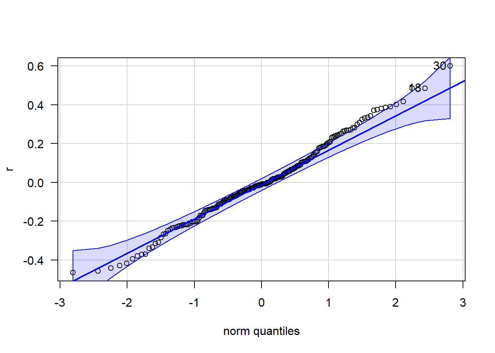
## [1] 30 18##
## One Sample t-test
##
## data: r
## t = -1.0633e-15, df = 200, p-value = 1
## alternative hypothesis: true mean is not equal to 0
## 95 percent confidence interval:
## -0.0275645 0.0275645
## sample estimates:
## mean of x
## -1.486301e-17##
## studentized Breusch-Pagan test
##
## data: modelo_final
## BP = 11.965, df = 6, p-value = 0.06275par(mfrow = c(2, 2))
plot(modelo_final, las = 1, col = "darkseagreen", which = 1:3)
par(mfrow = c(1, 1))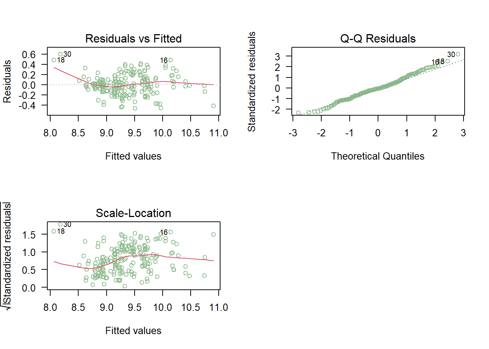
- Media cero: el p-valor de la prueba t es 1, por lo que se cumple el supuesto (lo esperado, pues el modelo tiene intercepto y se estima por MCO).
- Normalidad: en Shapiro-Wilk, \(W = 0.991\) y \(p = 0.27\). No se rechaza la normalidad.
- Varianza constante: en Breusch-Pagan, \(p = 0.063\), por lo que se cumple la varianza constante.
- Independencia: el estadístico de Durbin-Watson es 1.1 (p = 0). Hay evidencia de autocorrelación. Una posible explicación es que la base está ordenada por marca, de modo que autos consecutivos de una misma marca tienen errores parecidos.
Por lo anterior, los supuestos no se cumplen del todo. Aun así, la transformación logarítmica reduce la asimetría de la respuesta y las desviaciones son moderadas, por lo que usamos el modelo con cautela: las pruebas de hipótesis y los intervalos deben leerse como aproximados.
1.13.7.1 Errores estándar robustos
Como la prueba de Breusch-Pagan puede indicar varianza no constante, reportamos también los errores estándar robustos (HC3), que no dependen del supuesto de homocedasticidad:
##
## t test of coefficients:
##
## Estimate Std. Error t value Pr(>|t|)
## (Intercept) 9.99280971 0.20427502 48.9184 < 2.2e-16 ***
## engine_size 0.00496684 0.00066105 7.5136 2.060e-12 ***
## avg_mpg -0.03616679 0.00539100 -6.7087 2.098e-10 ***
## weight_power_ratio -0.01070356 0.00452153 -2.3672 0.018905 *
## bs_convertible 0.19685294 0.08339508 2.3605 0.019243 *
## bs_hatchback -0.09437400 0.02878652 -3.2784 0.001237 **
## diesel 0.45162987 0.06242023 7.2353 1.052e-11 ***
## ---
## Signif. codes: 0 '***' 0.001 '**' 0.01 '*' 0.05 '.' 0.1 ' ' 11.13.8 Outliers y observaciones influenciales
Identificamos outliers con los residuales estudentizados (se consideran atípicos si \(|r_i|>3\)) y la prueba de Bonferroni, y observaciones influenciales con la distancia de Cook.
## 30
## 30## No Studentized residuals with Bonferroni p < 0.05
## Largest |rstudent|:
## rstudent unadjusted p-value Bonferroni p
## 30 3.251462 0.001355 0.27235# distancia de Cook
Di <- cooks.distance(modelo_final)
n <- nobs(modelo_final)
p <- length(coef(modelo_final))
umbral <- 4 / (n - p - 2)
infl_idx <- which(Di > umbral)
infl_idx## 1 16 18 30 47 64 108 124 125 126 152 155 157
## 1 16 18 30 47 64 108 124 125 126 152 155 157plot(Di, type = "h", ylab = "Distancia de Cook", xlab = "Índice",
main = "Distancia de Cook (línea = umbral)")
abline(h = umbral, lty = 2)
text(infl_idx, Di[infl_idx], labels = infl_idx, pos = 3, cex = 0.8)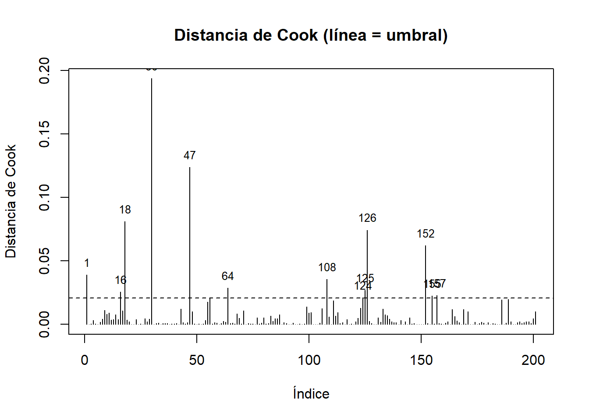
Las observaciones 30 tienen residuales estudentizados mayores que 3 en valor absoluto (el mayor es 3.25). Sin embargo, en la prueba de Bonferroni el p-valor ajustado es 0.272, por lo que no hay evidencia suficiente para afirmar que sean outliers. Por otro lado, 13 observaciones superan el umbral de Cook (\(4/(n-p-2)=\) 0.0208), pero la mayor distancia es solo 0.194. Como no identificamos una causa asignable que justifique removerlas, las conservamos en el modelo.
1.13.9 Predicción
Con el modelo final podemos estimar el precio de un auto con características dadas. Como ejemplo, tomamos un sedán a gasolina con motor de 120 pulgadas cúbicas, rendimiento promedio de 28 mpg y relación peso-potencia de 25. Los intervalos se calculan en la escala logarítmica y luego se devuelven a dólares con la función exponencial.
dato_nuevo <- data.frame(engine_size = 120, avg_mpg = 28, weight_power_ratio = 25,
bs_convertible = 0, bs_hatchback = 0, diesel = 0)
# intervalo de confianza para el precio promedio
pred_ic <- exp(predict(modelo_final, newdata = dato_nuevo, interval = "confidence"))
pred_ic## fit lwr upr
## 1 11032.18 10593.6 11488.92# intervalo de predicción para un auto nuevo
pred_ip <- exp(predict(modelo_final, newdata = dato_nuevo, interval = "prediction"))
pred_ip## fit lwr upr
## 1 11032.18 7402.979 16440.55Para un auto con esas características, el precio estimado es de aproximadamente $11032 USD. Con una confianza del 95%, el precio promedio de los autos con esas condiciones está entre $10594 y $11489 USD, mientras que el precio de un auto nuevo con esas condiciones estaría entre $7403 y $16441 USD. El intervalo de predicción es más amplio porque incluye, además, la incertidumbre del error aleatorio de un auto nuevo.
1.13.10 Conclusiones del modelo
- Elegimos una RLM porque la respuesta es continua y hay varias variables explicativas, usando \(\log(\text{price})\) para corregir la fuerte asimetría del precio.
- Eliminamos
curb_weightyhorsepowerpor multicolinealidad (\(VIF > 5\)) y seleccionamos las variables con el AIC mediante todas las regresiones posibles. - El modelo final tiene 6 variables explicativas (
engine_size,avg_mpg,weight_power_ratio,bs_convertible,bs_hatchback,diesel) y un \(R^2\) ajustado de 0.839. - Un motor más grande y la carrocería convertible o el motor diésel se asocian con precios más altos, mientras que los hatchback y los autos con mayor rendimiento de combustible tienden a ser más baratos.
- Los supuestos de normalidad, varianza constante e independencia no se cumplen del todo, por lo que las conclusiones inferenciales deben tomarse con cautela.
1.14 Conclusiones generales
- Exploración: el precio es asimétrico a la derecha; la mayoría de los autos son económicos y un grupo pequeño de gama alta alarga la cola. Esto motivó la transformación logarítmica.
- Correlación: las variables de tamaño y potencia del motor (
engine-size,horsepower,curb-weight) son las más asociadas con el precio; el rendimiento de combustible se asocia de forma inversa. - Pruebas de hipótesis: Los resultados muestran que el rendimiento en carretera supera significativamente al urbano en \(5.51\text{ mpg}\) (\(p = 0\), \(d_z = 3.41\)) y que el precio varía de forma significativa según el estilo del vehículo (\(p = 4.98 \times 10^{-5}\), \(\epsilon^2 = 0.125\)). En cuanto al combustible, aunque los autos diésel cuestan un \(25.9\%\) más en promedio (\(d = 0.46\)), la diferencia estadística es marginal y depende de la prueba empleada (Welch \(p = 0.057\) vs. Wilcoxon \(p = 0.041\)).
- Tabla de contingencia: Sí existe una asociación estadísticamente significativa entre el tipo de tracción y el estilo de carrocería (\(\chi^2 = 15.63\), \(p = 0.0036\) mediante simulación de Monte Carlo), pero su magnitud es débil (\(V\text{ de Cramér} = 0.197\)). En términos prácticos, aunque la distribución de la tracción no es independiente de la carrocería, la relación entre ambas variables es baja..
- Regresión simple: El tamaño del motor tiene un efecto positivo sobre el precio y permite estimar el promedio con alta precisión: para \(120\text{ in}^3\), el valor típico es de \(\$11{,}282\text{ USD}\), con un intervalo de confianza del \(95\%\) estrecho (\(\$10{,}865\text{ a }\$11{,}714\text{ USD}\)).No obstante, la capacidad del modelo para predecir vehículos individuales es limitada debido a la alta variabilidad residual, lo que amplía el intervalo de predicción al \(95\%\) entre \(\$6{,}615\) y \(\$19{,}239\text{ USD}\) y confirma que otros factores también determinan el precio final.
- Regresión múltiple: Se ajustó una regresión lineal múltiple sobre \(\log(\text{price})\) para corregir la asimetría del precio; tras eliminar
curb_weightyhorsepowerpor multicolinealidad (\(\text{VIF}\) mayor que \(5\)) y seleccionar variables con AIC, el modelo final de \(6\) predictores (engine_size,avg_mpg,weight_power_ratio,bs_convertible,bs_hatchbackydiesel) alcanzó un \(R^2\text{ ajustado}\) de \(0.839\). En él, mayor tamaño de motor, carrocería convertible y motor diésel se asocian con precios más altos, mientras que los hatchback y mayor rendimiento (avg_mpg) se asocian con precios menores, aunque las inferencias deben tomarse con cautela porque no se cumplen del todo los supuestos de normalidad, varianza constante e independencia. - Limitaciones: supuestos que no se cumplen del todo, la base es de 1985 con solo 205 autos, y hay categorías con muy pocas observaciones (
convertible,hardtop,diésel).
1.15 Referencias
- Schlimmer, J. C. (1987). Automobile [conjunto de datos]. UCI Machine Learning Repository.
- de Oro Aguado, C. (2026). Notas de métodos estadísticos. https://cdeoroaguado.github.io/rbook_met_estad/
- R Core Team. R: A Language and Environment for Statistical Computing.
- Wickham, H. et al. Welcome to the tidyverse. Journal of Open Source Software.
- Fox, J. y Weisberg, S. An R Companion to Applied Regression (paquete
car).